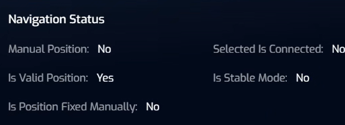
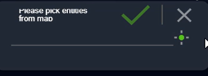
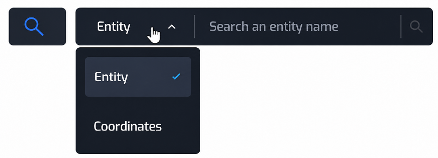
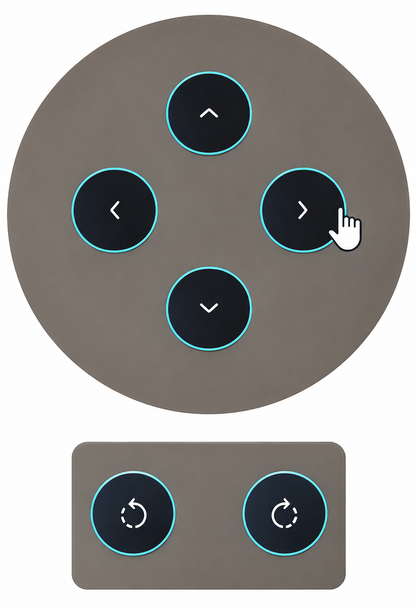
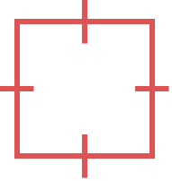

9
| Proprietary Notice This document contains secret information of commercial value, proprietary to Elbit Systems LTD. It is prohibited to copy, use, or transmit this document and/or any part thereof to any unauthorized persons. |
|---|
Contents
List of Abbreviations and terms
Platform Screen Management Bar
Map Tools Menu - Local Graphics
Map Annotations and Tactical Symbols
Data Center – List Management Window – Meteorology
Meteorological Message Sources
Meteorological Message Validity
Data Center – List Management Window – Missions
Data Center – List Management Window – Tasks
Data Center – List Management Window – Mission Groups
Data Center – List Management Window – MV Management
Preconditions for Fire Mission Execution
Filling Ammunition - Automatic Mode
Filling Ammunition - Manual Mode
Creating a Call for Fire (CFF) Request
Creating a Common Fire Mission
Opening the Terrain Analysis Tools
Measuring Distance on the Map (Ruler)
Measuring Distance Between Two Objects or Specific Location
Measuring Distance from Object to Specific Location
Initiating a Conversation with Network User
Creating a New Conversation Group
TORCH-X-DITA Fire Mission Logic
Meteorological (MET) Message Creation
Execute Fire Mission (Standard Mode)
Execute Fire Mission (Automatic Mode)
Execute Fire Mission (Semi-Automatic Mode)
Changing the Rounds Allocation
Selecting Alternative Fire Solution
Processing the Mission (Restart)
Concluding and Reporting a Mission
1INTRODUCTION
This section contains the following subsections:
1.1PURPOSE OF THIS MANUAL
The purpose of this manual is to provide DITA gun users with comprehensive guidance for the operation and use of the Torch‑X™ Artillery system as implemented on the 155 mm DITA platform.
1.2Arrangement of this Manual
This section introduces the Torch‑X™ Artillery system as implemented on the 155 mm DITA platform and establishes the context for the entire manual. It defines the purpose and structure of the document while providing essential background information required for its effective use. This manual includes the following chapters:
Chapter 1 - Introduction
This chapter provides general information on the scope and arrangement of the manual, list of applicable documents, general safety instructions, definition of warnings, cautions and notes, and list of abbreviations.
Chapter 2 - GENERAL DESCRIPTION
This chapter provides a comprehensive overview of the Torch‑X™ Artillery system as implemented on the 155 mm DITA platform. It outlines the system architecture, operational purpose, and key capabilities that enable advanced command and control of artillery fire missions within a networked battlefield environment.
Chapter 3 - HUMAN-MACHINE INTERFACE
This chapter defines the Human‑Machine Interface (HMI) of the Torch‑X™ Artillery system as implemented on the 155 mm DITA platform. It provides a detailed description of the graphical user interface, system screens, and user interaction mechanisms that enable efficient operation of the system under operational conditions.
Chapter 4 - USER GUIDE
This chapter provides comprehensive operational guidance for the effective use of the Torch‑X™ Artillery system on the 155 mm DITA platform. It describes the step‑by‑step procedures required to perform system operations, from initial setup through execution and management of fire missions.
1.3Applicable Documentation
N/A
1.4Warnings, Cautions and Notes
Warnings and cautions precede the text and follow the paragraph heading to which they apply. Notes may precede or follow applicable text, depending upon the material to be highlighted. Warnings, cautions or notes are concise statements used to emphasize important or critical data. The definitions of warning, caution and note are as follows:
1.5List of Abbreviations and terms
This section contains the following subsections:
1.5.1Terms
| Term | Meaning | Description |
|---|---|---|
| Live Mission | - | An operational fire mission executed using live ammunition. The system fully controls and supports the firing process, including ballistic calculations, loading, aiming, and firing functions. |
| Practice Mission | - | A training mission used for simulation and crew proficiency. Ballistic solutions are calculated, but weapon firing circuits remain inhibited to prevent live fire. |
| Standard Mode | - | A fire mission execution mode in which the operator manually controls and authorizes each stage of the firing sequence, including aiming, loading, and firing. |
| Semi-Automatic Mode | - | A mission execution mode in which the system automates preparation and loading processes, while the operator retains firing authorization. |
| Automatic Mode | - | A mission execution mode in which the system automatically performs aiming, loading, and firing operations with minimal operator intervention. |
| CFF | Call for Fire | A structured request for artillery fire support transmitted through the command-and-control network. |
| Quick Task | - | A rapidly generated operational task that can be assigned directly from the tactical map, such as ISR, Engagement, or Evacuation. |
| LOS | Line of Sight | A terrain analysis function used to determine whether a direct visual path exists between two geographic locations. |
| Dominated Area | - | A terrain analysis product identifying areas visible from a selected observation point based on terrain elevation data. |
| MV | Muzzle Velocity | The speed of a projectile as it exits the weapon barrel. Used by the ballistic engine to improve firing solution accuracy. |
| Optimized Fire Solution | - | The primary ballistic solution selected by the system based on mission requirements, ammunition availability, safety constraints, and environmental conditions. |
| Grid Correction | - | A fire adjustment applied to an active mission in order to correct the point of impact based on observer feedback or battlefield conditions. |
| METCM | Meteorological Computer Message | A set of data, describing meteorological conditions in various heights around an area known as the Center of Validity (CoV). These meteorological conditions serve as input parameters for various ballistic calculations for the purpose of increasing the accuracy of artillery fire, and allowing friendly radar systems to better detect and identify friendly artillery shells while in mid-flight for the purpose of performing artillery adjustmentsh METCM objects may be created via a meteorology device or entered manually into the system. These objects are distributed between all adjacent artillery unit. |
| METEO11 | Meteorological Message Type 11 | A meteorological message containing atmospheric data such as wind, temperature, and air density at different altitudes for ballistic computation purposes. |
| Fire Mission | - | A tactical mission created to engage a target using indirect fire. It includes target data, ammunition selection, ballistic calculations, and mission execution parameters. |
| Fire Plan | - | A component of a fire mission that defines ammunition type, fuze settings, number of rounds, firing rate, and engagement method. |
| MRSI | Multiple Rounds Simultaneous Impact | A firing technique in which multiple rounds are launched on different trajectories so that they impact the target simultaneously. |
| MQE | Minimum Quadrant Elevation | A safety-related firing parameter that defines the minimum permissible elevation angle for a given firing sector or mission. |
| TOT | Time on Target | A coordinated fire support technique in which rounds are planned to arrive at the target at a specific designated time. |
| AOI | Area of Interest | A designated operational area used for monitoring, planning, analysis, and situational awareness on the tactical map. |
| Common Fire Mission | - | A standard fire mission created through the tactical map or mission management workflow for engaging a designated target. |
1.5.2Abbreviations
| Abbreviation | Meaning |
|---|---|
| AOI | Area of Interest |
| AMSL | Above Mean Sea Level |
| BCP | Battery Command Post |
| CAS | Close Air Support |
| C4I | Command, Control, Communications, Computers and Intelligence |
| C4ISR | Command, Control, Communications, Computers, Intelligence, Surveillance and Reconnaissance |
| CFF | Call for Fire |
| CEP | Circular Error Probable |
| CoV | Center of Validity |
| DCB | Data Collection Box |
| DEM | Digital Elevation Model |
| DFS | Direct Fire Control System |
| DTG | Date-Time Group |
| DTM | Digital Terrain Model |
| EAPE | Estimated Altitude Position Error |
| EHPCEP | Estimated Horizontal Position Circular Error Probable |
| EVAC | Evacuation |
| ETC | Enhanced Tactical Computer |
| FCS | Fire Control System |
| FDC | Fire Direction Center |
| FFE | Fire for Effect |
| FO | Forward Observer |
| GIS | Geographic Information System |
| GNSS | Global Navigation Satellite System |
| GPS | Global Positioning System |
| HMI | Human-Machine Interface |
| IBIT | Initiated Built-In Test |
| INS | Inertial Navigation System |
| ISR | Intelligence, Surveillance and Reconnaissance |
| LACU | Loading Automat Control Unit |
| LOS | Line of Sight |
| LUT | Last Update Time |
| MED | Medical Support |
| MEDEVAC | Medical Evacuation |
| METCM | Meteorological Computer Message |
| METEO11 | Meteorological Message Type 11 |
| MGRS | Military Grid Reference System |
| MQE | Minimum Quadrant Elevation |
| MRSI | Multiple Rounds Simultaneous Impact |
| MV | Muzzle Velocity |
| MVR | Muzzle Velocity Radar |
| MVW | Muzzle Velocity for Work |
| NATO | North Atlantic Treaty Organization |
| OPORD | Operation Order |
| RAS | Robotic and Autonomous Systems |
| SAM | Surface-to-Air Missile |
| SPG | Self-Propelled Gun |
| TOT | Time on Target |
| UAV | Unmanned Aerial Vehicle |
| UTC | Coordinated Universal Time |
| UTM | Universal Transverse Mercator |
| WGS | Weapon Guidance System |
pp
2GENERAL DESCRIPTION
This section contains the following subsections:
2.1SCOPE
This chapter provides a comprehensive overview of the Torch‑X™ Artillery system as implemented on the 155 mm DITA platform. It outlines the system architecture, operational purpose, and key capabilities that enable advanced command and control of artillery fire missions within a networked battlefield environment.
2.2GENERAL OVERVIEW
Elbit Systems' Torch-X™ is an advanced, modular Command, Control, Communications, Computers, Intelligence, Surveillance, and Reconnaissance (C4ISR) and battle management software framework.
It connects combat units, sensors, and weapons across air, land, and sea, delivering real-time situational awareness and AI-driven decision support.
Torch-X operates across several specialized defense domains to shorten the "sensor-to-shooter" loop:
- Mounted: Integrates sensors, weapons, and communications into combat vehicles for networked command and control.
- Dismounted: Connects individual soldiers on the battlefield, providing Blue Force Tracking, navigation, augmented reality, and 3D visualization.
- Artillery & Fires: Provides digital fire control and management for indirect fire and Close Air Support (CAS) to optimize precision and coordination.
- Maritime & Borders: Fuses data from various physical and electronic sensors to provide a unified operational picture for coastal and naval protection.
- Robotic and Autonomous Systems (RAS): Allows commanders to control and integrate unmanned platforms.
The Torch-X Artillery application enables the gun crew to create fire missions and fire plans, communicate with allied forces via an integrated messaging system (chat), manage and monitor onboard ammunition inventory, and input meteorological data.
The application provides real-time situational awareness by displaying precise positioning, azimuth, and elevation data, while computing advanced ballistic firing solutions and monitoring critical weapon system statuses.
The gun crew can manage tactical maps and execute vital operational commands—all delivered through a modern, ergonomic, and intuitive user interface designed with high-visibility for easy and fast operation under combat conditions.
Specifically for the DITA gun platform, Torch-X is designed to autonomously operate the Loader and Control Unit (LACU) system to execute fire missions with minimal user interaction.
2.3OPERATIONAL NEED
The Torch-X™ Artillery primary operational need is to enable the DITA gun crew to engage artillery targets quickly with high accuracy.
In the modern networked warfare, there is a critical need for battlefield digitization and frameworks that enhance combat effectiveness while reducing the cognitive load on personnel at all echelons.
By minimizing manual interaction with both the gun and C4I systems, Torch-X provides optimal execution of fire missions while maintaining constant control over safety and system status.
2.4MAIN FEATURES
- Provides four distinct autonomy levels for managing missions: Manual, Standard, Semi-Automatic, and Automatic
- Key technical features include sophisticated ballistic algorithms, rapid navigation and deployment procedures, and NATO interoperability standards.
- Rapid sensor-to-shooter loops and superior situational awareness.
- One-command firing procedures, such as "Load" for Semi-Automatic or "Start" for Automatic modes.
- Automatic safety cessation, where firing procedures stop automatically if technical errors or safety issues are detected.
- Enables gun crew to manage fire missions through four levels of autonomy, which are designed to minimize user interaction and optimize mission execution.
2.5INTERFACES
Torch-X is built on the E-CIX™ open architecture framework, for seamless integration with a wide array of hardware and software.
It interfaces directly with platform control systems, computing terminals, and radio communications. The system features integration with various sensors, including INS, MVR, WGS, and DCB.
Furthermore, it connects multiple echelons and roles, from Forward Observers (FO) to Battery Command Posts (BCP) and battalion Firing Direction Centers (FDC).
For the DITA platform, the core interface involves the autonomous operation of the LACU system to manage firing timing and rates.
3HUMAN-MACHINE INTERFACE
This section contains the following subsections:
3.1SCOPE
This chapter defines the Human‑Machine Interface (HMI) of the Torch‑X™ Artillery system as implemented on the 155 mm DITA platform. It provides a detailed description of the graphical user interface, system screens, and user interaction mechanisms that enable efficient operation of the system under operational conditions.
3.2SCREENS TREE
This section contains the following subsections:
3.2.1Screen Layout
| No. | Item | Description |
|---|---|---|
| 1 | Application Header | Displays critical system parameters and alerts while navigating between different application screens. [refer to section Application Header]. |
| 2 | Screen/Window Name | Displays the current screen or menu name. |
| 3 | Main Work Area | Displays active operational screens. Serves as the central interface for the application's ongoing operations, automatically resizing its layout to accommodate side panels (like the Side Map Panel) when expanded. |
| 4 | Split-Screen Button (<) | Resizes and splits the screen layout to display the tactical map alongside the active workspace. |
| 5 | Main Screens Navigation Bar | Enables the user to switch instantly between application screens with a single tap. [refer to section Main Screens Navigation Bar] |
3.2.1.1Application Header
| No. | Item | Description |
|---|---|---|
| 1 | TORCH-X Logo | When tapped, opens the Software Versions And Site Config window [refer to section System Version and Site Config Window] |
| 2 | Connectivity Indicator | Displays the current connectivity status between the TORCH‑X application and external network entities, including local systems, Battery, friendly units. |
| 3 | Beacon Indicator | Provides a real-time status overview of the Ballistic Engine (Beacon). The Beacon is responsible for executing the artillery firing algorithms and ballistic software package, generating accurate firing solutions and supporting all ballistic computations required for mission planning and execution on the DITA artillery system. States: - the Beacon is offline, disconnected, or has a critical software/hardware failure. - the Beacon is fully connected, online, and functional. |
| 4 | Navigation Indicator | Provides the operator with a real-time overview of the platform's self-positioning and spatial orientation status, specifying the active data source. - No valid self-positioning data (either automated or manual). - platform's self-positioning coordinates are not derived from automated sensors (GPS/INS) but were manually input by the operator. -. platform's self-positioning data is currently derived from the Global Positioning System (GPS). Tapping the Navigation Indicator opens info window:  Manual Position: Indicates whether the current coordinates were manually entered by the crew rather than retrieved from automated navigation systems. Is Valid Position: A dynamic status confirming whether the current positioning data is reliable and valid for firing operations. Is Position Fixed Manually: Indicates whether a manual override or calibration of the platform's position was performed by the operator (e.g., during GPS/INS degradation). Selected Is Connected: Displays the connectivity status (Yes/No) of the selected navigation/positioning sensor. Is Stable Mode: Indicates whether the navigation system has completed its alignment process and reached a stable state required for accurate movement or firing. |
| 5 | Platform Indicator | Displays the geographical coordinates of the platform using the Universal Transverse Mercator (UTM) coordinate system. - displayed when the operator presses EXIT POSITION button. Indicates that the vehicle has left its firing position or is in transit, declaring the stored position data invalid. - displayed when the operator presses SET POSITION button. Indicates that the platform is deployed in a defined firing position, the coordinates are locked into the system, and the howitzer is ready for ballistic calculations. Tapping the Platform indicator window opens an info window: Current Position: Displays the platform's live self-positioning coordinates (derived from the active navigation source). Save as Position: Displays the position coordinates saved in the system from the last time SET POSITION was executed. |
| 6 | Mission Type | Defines the tactical objective of the fire mission: Practice or Live. |
| 7 | Mission Activation Status | Indicates the current phase and operational state (Waiting, TBD) of the selected fire mission |
| 8 | Mission Autonomous Mode | Displays the automation state of the DITA howitzer's systems selected by the user: Standard mode, Semi-automatic mode, or Automatic mode.. |
| 9 | Chat icon | Opens the Chat Window. This window provides an instant-messaging interface for communication between the platform crew and external command elements or other units. [refer to section Chat Window]. |
| 10 | Notifications icon | Opens the Notifications window that categorizes all system notifications into four tabs: ALL, Threats, Caution, and Info. [refer to section Notifications Window] |
| 11 | System Clock | Displays synchronized system time in a 24-hour format (HH:MM:SS). |
3.2.1.1.1System Version and Site Config Window
| No. | Item | Description |
|---|---|---|
| 1 | Versions Section | Provides a centralized view of the current software/firmware versions running in various system components: Application Version - The version of the TORCH-X application. Infrastructure Version - The version of the core system Infrastructure. GIS Engine Version - The version of the Geographic Information System (GIS) engine used for the digital mapping, terrain analysis, and spatial data Tiger Version - The core software infrastructure that serves as the secure runtime environment and management layer for the TORCH-X). Beacon Version - The version of the beacon module. Algorithms Version - The version of the core fire-control calculation engine, ballistic modules, and trajectory computation software. eMPMT Version - The version of the eMPMT engine. |
| 2 | Site Config | A core infrastructure component that dictates the application's operational profile based on the specific asset type it is deployed on within the artillery network. This configuration dynamically adapts the HMI, data flows, and command capabilities. Unit- displays the tactical designation or ID of the specific DITA artillery battery Role - displays the operational profile assigned to the application (e.g., Commander, Gunner) User – displays the current user logged into the system. |
3.2.1.1.2Chat Window
| No. | Item | Description |
|---|---|---|
| 1 | Search Field | Enables the user to type and quickly filter specific user within the list. Tapping the user recored, opens a conversation window [refer to section User Conversation Window]. |
| 2 | When clicked, opens a list of available network users to initiate a conversation. | |
| 3 | When clicked, Opens a list of available network users to create a group chat. | |
| 4 | Network Users | Displays a list of available network users to initiate a conversation. Tapping the user recored, opens a conversation window [refer to section Group Conversation Window]. User type icon is displayed next to each user record: Group () or Individual User (). |
3.2.1.1.3User Chat Window
| No. | Item | Description |
|---|---|---|
| 1 | (Pick Entity) | Enables the user to quickly choose an entity directly from the tactical map interface. |
| 2 | Search Field | Enables the user to type and quickly filter specific user within the list. |
| 3 | Network Users | Displays a list of available network users to initiate a conversation. Tapping the user recored, opens a conversation window [refer to section User Conversation Window]. User type icon is displayed next to each user record: Group () or Individual User (). |
3.2.1.2User Conversation Window
| No. | Item | Description |
|---|---|---|
| 1 | Message Timestamp | Shows the specific creation/transmission time next to each individual message. |
| 2 | Date Separator | Visual markers dividing the chat history by day (e.g., "Today", "Yesterday", or specific dates). |
| 3 | Chat Bubbles | Displays the content of sent and received text messages along with the time of transmission (HH:MM). |
| 4 | Quick Presets | A menu containing pre-configured, standard operational message templates (Presets) for rapid response and minimal typing under combat conditions. |
| 5 | SEND Button | Sends the typed message or attached tactical data over the active radio/network link. |
| 6 | Text Input Field | Enables the user to type manual responses or compose new messages (up to 500 characters(. |
| 7 | "+" Button | Opens an action menu containing the following options: PASTE: Inserts copied text data from the system clipboard into the input field. ADD MEDIA: enables the attachment of external media/files. ADD LOCATION: enables the user to select specific coordinates from the map. When clicked, a pop-up message appears: “Please Select a Location from the Map”. ADD ENTITY: enables the user to select specific entity from the map. When clicked, a pop-up message appears: “Please Pick entities from Map”.  |
| 8 | Recipient Details | Displays the identity, tactical callsign, or user profile of the message recipient. |
| 9 |
3.2.1.2.1Group Chat Window
| No. | Item | Description |
|---|---|---|
| 1 | (Pick Entity) | Enables the user to quickly choose an entity directly from the tactical map interface. |
| 2 | Search Field | Enables the user to type and quickly filter specific user within the list. |
| 3 | NEXT Button | Opens a new group window for entering the group details such as group Subject. In addition, the window displays the selected users. |
| 4 | Network Users | Displays a list of available network users with checkboxes to select and add multiple contacts to the group chat. The user can select up to 10 participants to add to the group. |
3.2.1.2.2Group Conversation Window
| No. | Item | Description |
|---|---|---|
| 1 | Message Details | Displays the identity, tactical callsign, or user profile of the message sender and the the specific message timestamp. |
| 2 | Date Separator | Visual markers dividing the chat history by day (e.g., "Today", "Yesterday", or specific dates). |
| 3 | Chat Bubbles | Displays the content of sent and received text messages along with the time of transmission (HH:MM). |
| 4 | Action Context Menu | Opens a menu with the following options: Properties Opens the "Add Participant" window to view current participants, remove them from the group, or modify the group's subject/name. Participant Opens the chat window to select and add new participants to the group, or remove existing ones. Exit Group Disconnects the platform/unit from the active group. |
| 5 | Quick Presets | A menu containing pre-configured, standard operational message templates (Presets) for rapid response and minimal typing under combat conditions. |
| 6 | SEND Button | Sends the typed message or attached tactical data over the active radio/network link. |
| 7 | Text Input Field | Enables the user to type manual responses or compose new messages (up to 500 characters(. |
| 8 | "+" Button | Opens an action menu containing the following options: PASTE: Inserts copied text data from the system clipboard into the input field. ADD MEDIA: enables the attachment of external media/files. ADD LOCATION: enables the user to select specific coordinates from the map. When clicked, a pop-up message appears: “Please Select a Location from the Map”. ADD ENTITY: enables the user to select specific entity from the map. When clicked, a pop-up message appears: “Please Pick entities from Map”. |
3.2.1.2.3Notifications Window
| No. | Item | Description |
|---|---|---|
| 1 | Search Button | Opens the search field used to filter and locate specific alerts or messages within the notification log by typing keywords. |
| 2 | Group By Button | Opens a drop-down menu: Notification Type: Groups notifications by their severity or operational category (e.g., Threats, Caution, Info). Read Status: Groups notifications by their review state. |
| 3 | Action Button | Opens a drop-down menu: Acknowledge All: Marks all active notifications as read/viewed. Delete All: Clears all notifications from the current view or log. |
| 4 | Notifications Tabs | Categorizes all system notifications into four tabs: All Tab - Displays a unified, chronological log of all system notifications Threats Tab - Displays critical tactical alerts that may required user intervention (e.g., incoming counter-battery fire, or immediate target updates). Caution Tab - Displays operational warnings and system status alerts (e.g., LACU Error,, or Partly DTM check). Info Tab - Displays general status updates and non-critical system logs (e.g., Platform Connected, WGS is connected). |
| 5 | All/ Threats/ Caution/ Info Message | Displays a list of messages (All, Threats, Caution, or Info) based on the currently selected tab. |
3.2.1.2.4Notifications Window – Message
| No. | Item | Description |
|---|---|---|
| 1 | Info Icon | Indicates an error, warning, or alert condition that may require user attention or corrective action. |
| 2 | Alert Name | Indicates the event/Alert Name. |
| 3 | Alert Description | A detailed text description providing operational context and specific data about the alert. |
| 4 | Delete Alert Button | Removes the alert from the active view. |
| 5 | Time Stamp | Indicates the time (HH:MM) and date of the alert. |
3.2.1.2.5Notifications Pop-up Message
| No. | Item | Description |
|---|---|---|
| 1 | Sender Identifier | Displays the sender ID (e.g., unit name, or battalion number), the message (e.g., "Mission Started") and timestamp. |
| 2 | X Button | Hides the pop-up message from the current view. |
| 3 | Open Conversation Button | Opens the active conversation thread with the specific sender. |
3.2.1.3Main Screens Navigation Bar
| No. | Item | Description |
|---|---|---|
| 1 | Platform | When Clicked, displays the Platform Screen. This screen serves as the primary screen after user login, providing a centralized, real-time overview of the system physical status, devices status, spatial orientation and location, and system health. For detailed description, refer to section Platform Screen. |
| 2 | Data Center | When Clicked, displays the Data Center Screen. This screen displays system records and stored data, organized into the following categories: Fire Missions, Mission Groups, Meteorological Telegrams, Tasks, Ammunition Muzzle Velocity. For detailed description, refer to section Data Center Screen. |
| 3 | Mission | When Clicked, displays the Mission Screen. [refer to section Mission Screen] |
| 4 | Map | When Clicked, displays the Map Screen. [refer to section Map Screen]. This screen displays the operational map, enabling the user to perform geospatial actions and utilize integrated map tools. |
| 5 | Ammunition | When Clicked, displays the Ammunition Management Screen. [refer to section Ammunition Management Screen] |
| 6 | Settings | When Clicked, displays the Settings Screen. [refer to section Mission Screen] |
3.2.2Platform Screen
| No. | Item | Description |
|---|---|---|
| 1 | Platform Management Bar | Monitors system operational status, coordinates, and altitude while enabling the user to toggle between system Position modes. [refer to section Platform Screen Management Bar] |
| 2 | Roll Section | Displays numerical and graphical indication of the vehicle's Roll angle relative to the horizontal plane. Current Value: Represents the real-time, actual physical Roll angle of the Vehicle as measured by the sensors (INS). |
| 3 | Fire Elevation (mil-East) and Pitch Section | Displays the vertical angle (elevation) of the gun barrel, measured by the INS in Angular Mils according to the Eastern European standard. Current Value: Represents the real-time, actual physical elevation angle of the barrel as measured by the turret sensors (INS). Mission Value: Represents (Yellow Color) the target/computed elevation angle required by the ballistic computer to execute the current loaded fire mission. In addition, it Provides a dynamic graphical representation of the DITA HOWTIZER and displays the real-time elevation angle relative to the horizontal plane. The crew uses this field to verify that the physical barrel elevation (Current) aligns perfectly with the calculated firing solution (Mission) before initiating a fire sequence. Current [Pitch]: Displays the real-time Pitch angle of the vehicle chassis relative to the geographic horizon. |
| 4 | Fire Azimuth (mil-East) Section | Displays the Azimuth angle of the turret, measured in Angular Mils according to the Eastern European standard. Current Value: Represents the real-time, actual physical Azimuth angle of the turret as measured by the turret sensors (INS, Shaft Encoders). Mission Value: Represents (Yellow Color) the target/computed Azimuth angle required by the ballistic computer to execute the current loaded fire mission. In addition, this section provides a real-time, visual representation of the turret's traverse angle (azimuth) relative to the vehicle's chassis and operational sectors [refer to section Azimuth Widget]. |
| 5 | Platform Management Menus | Provides quick access to critical parameter updates during platform deployment and prior to fire mission execution: Position Menu - enables the user to monitor, select, and manage the spatial coordinates and elevation data of the platform. [refer to section Position Menu] Devices Menu - provides connectivity and link status of seven peripheral devices integrated with the Fire Control System (FCS) for continuous monitoring. In addition, it enables the user to enter, configure or update relevant data required for the device’s operation. Error Log Menu - aggregates real-time diagnostic data and fault codes from all connected devices. Deployment Menu - includes dedicated functions required to manage the platform's deployment status such as firing position setting/Exiting, defining the firing sector orientation, and updating critical ballistic parameters essential for accurate fire control. [refer to section Deployment Menu] |
3.2.2.1Platform Screen Management Bar
| No. | Item | Description |
|---|---|---|
| 1 | Screen/Window Name | Displays the current screen or menu name. |
| 2 | Coordinates and Altitude Display | Provides a continuous, real-time display of the system current global position and altitude (in meters), synchronized via the onboard GPS/GNSS and Inertial Navigation System (INS) or manual entry. |
| 3 | Travel Lock Status indicator | Enables the user to monitor the travel lock state (open/closed). |
| 4 | System Operational Status | Displays visual confirmation for the crew, indicating whether the platform is fully prepared to accept and execute fire missions (READY) or if the automated firing sequence is currently interlocked (NOT READY). This operational readiness is transmitted to the Battery Command Post (BCP) to provides the Battery Commander with a comprehensive Operational Picture for efficient fire mission allocation. |
| 5 | Exit Position / SET Position | Toggles the system between two modes: SET Position: sets and locks the howitzer's current geographic coordinates and azimuth—derived from the integrated Inertial Navigation System (INS) and GPS—establishing them as the platform's official firing position reference. The sampled position is rendered on the tactical map display for visual cross-verification by the crew. Exit Position: commands the DITA system to immediately exit its current firing posture, clear its locked and stored position data, and prepare for movement. For example, for rapid displacement (shoot-and-scoot maneuver). |
3.2.2.1.1SET POSITION Concept
GPS and INS provide the platform's current position and orientation; however, these sources are not always fully consistent. Positioning errors, sensor inaccuracies, signal degradation, and navigation drift may cause small differences between the reported coordinates and the platform's actual location.
While these deviations may be acceptable for navigation purposes, they can significantly affect ballistic calculations. Artillery fire-control computations require a verified and reliable firing position to ensure accurate firing solutions.
For this reason, the operator must first verify the platform location and confirm that the displayed coordinates represent the platform's true position. Once the operator is satisfied with the location data, the SET POSITION command is executed.
When SET POSITION is pressed, the system copies the coordinates and altitude currently displayed in the Position menu (depending the Location Source: INS, GPS, or manual) and stores them as the official firing position and the unit position (BCP). The selected data is transferred to the Stored Location field in the Deployment menu.
From that point onward, the Stored Location becomes the authoritative reference position used by the ballistic engine for all fire-control calculations, regardless of subsequent changes or minor fluctuations in the GPS or INS reported position. This ensures that all firing solutions are calculated from a stable, verified, and known platform location.
3.2.2.2Azimuth Widget
| No. | Item | Description |
|---|---|---|
| 1 | White Arc | Marks the current angle in azimuth measured by the system INS. |
| 2 | Turret Schema | Displays outline of the DITA howitzer. The chassis is fixed forward (pointing to the 0-mil mark), while the turret and barrel dynamically rotate to reflect the actual azimuth angle. |
| 3 | Operational & Restricted Sectors | Shaded Red Zone (No-Fire / Restricted Sector): Visually defines the safety limits or dead zones where firing is blocked due to physical obstructions or chassis protection. Clear Zone (Firing Sector): Highlights the authorized and safe traverse envelope available for weapon engagement. |
| 4 | Mil-Spec Compass Ring | A standard artillery Mil scale (0 to 6400 mils) with Key directional markers indicate directions: 0/6400 (Front/North), 1500 (E) (East), 3000 (S) (South), and 4500 (W) (West). |
| 5 | Chassis Heading | Marks the vehicle's true centerline (0 mils) (Blue color). |
| 6 | Mission Heading | Marks the mission calculated angle (Yellow color) in azimuth. |
3.2.2.3Position Menu
| No. | Item | Description |
|---|---|---|
| 1 | Pinpointing from Map () | Quick-action button that enables the user to tap directly on the tactical map to automatically set coordinates. When clicked, the screen layout chnages to display the tactical map alongside the active workspace. |
| 2 | Location (UTM Full) | Displays the precise geographical coordinates of the platform using the Universal Transverse Mercator (UTM) coordinate system. |
| 3 | Elevation (AMSL) (m) | Displays the platform's altitude/elevation in meters Above Mean Sea Level (AMSL). |
| 4 | Location Source | Defines the active positioning input: Auto (None) - system-selected optimal source (default) – INS. GPS: live satellite data from the onboard navigation system (GPS). Manual/MAP – user-defined coordinates: manual entry or directly from the map. |
3.2.2.4Devices Menu
| No. | Item | Description |
|---|---|---|
| 1 | Window Name | Displays the device name. The dropdown menu contains seven devices: Muzzle Velocity Radar (MVR) – Measures the actual speed of the projectile as it leaves the barrel. This real-time data is instantly fed into the fire control system to adjust ballistic calculations and maximize firing accuracy for subsequent projectiles. Data Collection Box (DCB) - functions as the central network switch and communication gateway for the DITA platform. The main onboard hardware devices (LACU, MVR, INS, WGS, filling boxes, etc.) route through the DCB, making it the critical link to the application. Loading Automat Control Unit (LACU) - responsible for the automated ammunition handling and ballistic execution sequence within the DITA turret (Conveyor Management, Loading Supervision). Filling Boxes - An auxiliary control device that enables the ammunition crew to manually control the conveyors and move through the ammunition magazine during the loading process. The device allows the crew to record the ammunition loaded into each magazine slot, including shell and propellant configurations. In addition, the commander may define a desired ammunition load plan, and the Filling Boxes guide the crew during loading to ensure the correct ammunition is placed in the designated magazine slots according to the approved loadout plan. Weapon guidance system (WGS) - manages and operates the DITA automated turret, providing the crew with monitoring data and direct control over turret movement (interfaces the INS). It translates ballistic data into precise mechanical adjustments, ensuring proper azimuth and elevation alignment for accurate firing operations. INS - calculates real-time positioning, navigation, and aiming data for the DITA platform. It operates in two primary modes: (1) Navigation Mode: Provides platform positioning coordinates, roll, and pitch/elevation angles. (2) Laying Mode: Provides orientation data specific to the gun barrel for accurate target engagement. Direct Fire Control System (DFS) – manages the direct-fire engagement cycles. Upon activation, it isolates the LACU from the main C4I system and verifies real-time shell and charge data for ballistic calculations. After firing, the DFS automatically reports the ammunition consumption and system status back to the main C4I application. |
| 2 | Connection Status | Provides a color-coded, visual representation of the operational connection state to the selected device: Disconnected - The device is disconnected. There is no communication or data flow. Connected - The device is connected and fully operational. Standby mode – the device is powered and interfaced with the C4I, but some functions are halt. Fault - Indicates a device-level issue. The physical or network connection exists, but the device is reporting an internal fault. |
| 3 | Properties Form | Opens a dedicated properties/configuration window for the chosen device. This enables the user to view and modify technical and operational parameters. |
| 4 | Health Icon | Provides a color-coded, visual representation of the operational connection state to the selected device: - The device is disconnected. There is no communication or data flow. - The device is connected and fully operational. - Indicates a device-level issue. The physical or network connection exists, but the device is reporting an internal fault/state. |
| 5 | Device Name | Displays the device name or identifier. |
3.2.2.4.1Devices Menu – MVR Form
| No. | Item | Description |
|---|---|---|
| 1 | MVR Status | Displays the communication status of the MVR (Connected / Disconnected). |
| 2 | MVR ERRORS COMMENTS | Textual breakdown of the active error code for troubleshooting by the crew or technical echelon. |
| 3 | EXPECTED MV | Displays the expected muzzle velocity calculated based on the selected shell type and charge zone, serving as the baseline for pre-fire ballistic computations. |
| 4 | Cancel | Discards all changes made and closes the form. |
| 5 | Save | Saves the current data. |
| 6 | CURRENT VELOCITY | Displays the actual muzzle velocity (in m/s) measured by the MVR during the last fired shell. |
| 7 | MVR ERRORS | Displays active hardware or software error codes reported by the MVR. |
| 8 | SOFTWARE VERSION | Displays the current firmware/software version installed on the MVR unit. |
| 9 | Connect to mvr | Commands the system to establish or re-establish communication with the Muzzle Velocity Radar (MVR). This function is typically used when the MVR is disconnected or communication with the device has been lost. |
3.2.2.4.2Devices Menu – DFS Form
| No. | Item | Description |
|---|---|---|
| 1 | Status | Displays the current operational and connectivity status of the DFS |
| 2 | Reset Connection | Attempts to re-establish communication with the DFS by resetting the active connection and initiating a new connectivity session. |
3.2.2.4.3Devices Menu – INS Form
| No. | Item | Description |
|---|---|---|
| 1 | Working Mode | Displays the current operational mode of the INS subsystem. |
| 2 | Align Mode | Displays the active INS alignment mode used to establish platform position and orientation. |
| 3 | Navigation Mode | Displays the active navigation mode used by the INS for position and orientation data generation. |
| 4 | Orientation Data Validation | Displays the validity status of the platform orientation data (Azimuth, Roll, and Pitch) provided by the INS. |
| 5 | Connection Status | Displays the communication status of the INS (Connected / Disconnected). |
| 6 | Align Time | Displays the elapsed or required time for completion of the INS alignment process. |
| 7 | Travel Lock Status | Displays the current state of the gun travel lock mechanism. |
| No. | Item | Description |
|---|---|---|
| 1 | Datum Type | Displays the active geodetic datum used by the navigation system for coordinate calculations and positioning data. |
| 2 | GPS Satellites | Displays the number of GPS satellites currently tracked and used for position calculation. |
| 3 | Location (UTM Full) | Displays the platform's current position in full Universal Transverse Mercator (UTM) coordinates. |
| 4 | Altitude (m) | Displays the platform altitude above Mean Sea Level (AMSL) in meters. |
| 5 | EAPE (m) | Displays the Estimated Altitude Position Error (EAPE), indicating the expected vertical positioning accuracy in meters. |
| 6 | Barrel Pitch | Displays the current elevation angle of the gun barrel as measured by the INS, relative to the horizontal plane. |
| 7 | Estimated Azimuth Error | Displays the estimated accuracy deviation of the barrel azimuth measurement, indicating the expected error in the reported azimuth value. |
| 8 | Estimated Roll Error | Displays the estimated accuracy deviation of the platform or barrel roll measurement, indicating the expected error in the reported roll value. |
| 9 | Traveled Distance | Displays the cumulative distance traveled by the platform since the last reset or reference point. |
| 10 | Estimated Pitch Error | Displays the estimated accuracy deviation of the barrel pitch measurement, indicating the expected error in the reported elevation value. |
| 11 | Barrel Roll (mil-East) | Displays the current barrel roll angle measured by the INS in Eastern Mils, indicating the lateral tilt of the weapon relative to its longitudinal axis. |
| 12 | Barrel Azimuth (mil-East) | Displays the current gun barrel azimuth measured by the INS in Eastern Mils. |
| 13 | EHPCEP (m) | Displays the Estimated Horizontal Position Circular Error Probable (CEP), indicating the expected horizontal positioning accuracy in meters. |
| 14 | GPS Status | Displays the operational status of the GPS receiver and the availability of satellite-based positioning data. |
| No. | Item | Description |
|---|---|---|
| 1 | IBIT | Initiates the Initiated Built-In Test (IBIT) procedure to verify the operational status and integrity of the INS subsystem. The test performs diagnostic checks and reports detected faults or system readiness. |
| 2 | Override Alert | Acknowledges and overrides the selected INS alert or warning, allowing the operator to continue system operation subject to applicable operational procedures and permissions. |
| 3 | Reset Distance | Resets the accumulated traveled distance counter and starts a new distance measurement cycle from zero. |
| 4 | Actions | Opens a context menu containing additional INS-related commands, maintenance functions, and diagnostic operations available to the user: Restart - Restarts the INS subsystem and reinitializes its navigation and orientation functions. This action is typically used to recover from faults or communication issues. Shutdown - powers down the INS subsystem and terminates all active navigation, positioning, and orientation processes. TL OUT - Commands the system to release or disengage the Travel Lock mechanism, allowing the weapon system to transition from transport configuration to operational status. Enter Laying - Switches the INS to Laying Mode, enabling the provision of precise barrel orientation, azimuth, and elevation data required for weapon alignment and target engagement. Integrated Mode - Commands the INS to operate in Integrated Mode, utilizing all available navigation sources and sensors to provide optimized positioning and orientation data. Shot Detection - Enables the Shot Detection function, allowing the INS to detect and record weapon firing events for navigation compensation, system monitoring, and ballistic processing. |
3.2.2.4.4Devices Menu – WGS Form
| No. | Item | Description |
|---|---|---|
| 1 | Status | Displays the current operational and connectivity status of the WGS |
| 2 | Park Position | Commands the weapon system to move the turret and barrel to the predefined transport/parking position. |
| 3 | Lay-on target | Commands WGS to automatically align the turret and barrel to the calculated azimuth and elevation required for the selected target. |
| 4 | Stop | Immediately halts the current weapon guidance or movement operation and suspends all active automatic positioning commands. |
| 5 | Release Barrel Lock | Releases the barrel locking mechanism, enabling the weapon system to move the barrel for aiming, laying, or operational procedures. |
3.2.2.4.5Devices Menu – LACU Form
| No. | Item | Description |
|---|---|---|
| 1 | Status | Displays the current operational and connectivity status of the LACU. |
| 2 | Status | Opens a dedicated panel containing the current operational and connectivity status of the LACU, indicating whether the subsystem is connected, available, and ready to perform automated loading and mission execution functions. |
| 3 | Mission Commands | Opens a dedicated panel containing mission-related commands and controls used by the LACU during fire mission execution. |
| 4 | Conveyor Commands | Opens a dedicated panel containing commands for controlling the ammunition conveyor system, including ammunition movement and magazine handling operations. |
| 5 | GiveUp Control | Releases LACU control authority and returns control of the subsystem to another authorized system, mode, or operator. |
3.2.2.5Error Log Menu
This menu aggregates real-time diagnostic data and fault codes from all connected devices. The events are classified by color code:
- Green (OK): Nominal operation; system/device functioning normally.
- Blue (General Info): Standard status updates and non-critical notifications.
- Orange (Important): Warning state; non-critical fault requiring attention without halting operations.
- Red (Critical): Major failure; requires immediate operator intervention.
3.2.2.6Deployment Menu
| No. | Item | Description |
|---|---|---|
| 1 | SET POSITION/EXIT POSITION. | Toggles the system between two modes: Set Position: sets and locks the howitzer's current geographic coordinates and azimuth—derived from the integrated Inertial Navigation System (INS) and GPS—establishing them as the platform's official firing position reference. The sampled position is rendered on the tactical map display for visual cross-verification by the crew. Exit Position: commands the DITA system to immediately exit its current firing posture, clear its locked and stored position data, and prepare for movement. For example, for rapid displacement (shoot-and-scoot maneuver). |
| 2 | MQE Button | Opens the MQE sub-window for detailed management. [refer to section MQE Window]. |
| 3 | ✓ (Confirm) | Confirms the typed value in Center of Arc field. |
| 4 | COA Input Field | Used for manually entering the Center of Arc value (in mils/degrees). |
| 5 | ✓ (Confirm) | Confirms the typed value in Charge Temp. (c°) field. |
| 6 | Charge Temp. Input Field | Used for manually entering a new ammunition temperature value for accurate ballistic calculation. |
| 7 | Charge Temp. (c°) Field | Displays the current charge temperature in degrees Celsius (°C) toghther with A timestamp (Date and Time) showing the last update. NOTE: By default, the temprature data remains valid for 2 hours. NOTE: The standard propellant temperature is 21.1°C. All propellant temperature corrections are calculated relative to this reference temperature. |
| 8 | Center of Arc Field | Enables the user to input and view the primary firing sector orientation (azimuth of the central lay line for the battery/gun), recived from the BCP. |
| 9 | MQE Field | Displays the Minimum Quadrant Elevation (MQE) value currently stored in the system. |
| 10 | Stored Location Field | Displays the system saved coordinates in a standard Military Grid Reference System (MGRS) format, followed by the Altitude data (above sea level) in meters. NOTE: If the INS-reported position deviates by more than 50 meters from the coordinates stored in the STORED LOCATION field, the STORED LOCATION value is automatically cleared. |
3.2.2.6.1MQE Window
| No. | Item | Description |
|---|---|---|
| 1 | Aim/Manual | Enables the user to toggle between automated alignment targeting (AIM) from INS and direct user input (MANUAL) |
| 2 | Azimuth Input Field | Used for manually entering the required Azimuth angle 0-6400 (in mils). Active only in MANUAL mode. |
| 3 | Elevation Input Field | Used for manually entering the required Elevation angle 0-6400 (in mils). Active only in MANUAL mode. |
| 4 | Add Button | When clicked, validates and sets the manually entered Azimuth and Elevation values into the active list. |
| 5 | Trash Icon | When clicked, removes the record from the MQE window. |
| 6 | Close Button | Closes the MQE sub-window and returns the user to the Deployment menu. |
| 7 | Elevation Value | Displays the manually added Elevation and Azimuth values. |
| 8 | Azimuth Value | Displays the manually added Elevation and Azimuth values. |
| 9 | No. | An incremental index showing the record number. |
| 10 | Note Field | Displays instructions for the user. |
3.2.3Map Screen
| No. | Item | Description |
|---|---|---|
| 1 | MAP OPORD Name Label | Displays the identifier or name of the currently active Operation Order (OPORD). This ensures the crew is viewing the correct tactical overlays, control measures, and graphics associated with the specific mission. |
| 2 | Search Button | Opens a search field and displays the virtual keyboard, enabling the user to quickly search for a tactical entity, location, or geographic coordinates within the system.  |
| 3 | Map Layers Button | Opens the Map Layers window [refer to section Map Layers Window]. This enables the user to toggle various visual overlays on or off. |
| 4 | Tactical Map | Serves as the primary visual interface where all positional data, targets, and map objects are displayed. It provides the user with real-time situational awareness incuding operational terrain, data layers, and tactical overlays. NOTE: right- tapping the map opens the Map Summary window [refer to section Map Summary Toolbar]. |
| 5 | Map Functions Bar | Enables the operator to control and operate various map functions [refer to section Map Functions Bar]. |
| 6 | Sliding Drawer Button | Toggles the interface layout between a Full-Screen Map View and a Split-Screen / Dashboard View for multitasking. |
| 7 | Map Scale Indicator | Provides a dynamic visual reference for measuring distances. |
| 8 | Map Tools Menu | Provides quick access to advanced utilities. It contains the following functional menus: Terrain Analysis: Enables the user to perform measurements and analysis of local terrain. Local Graphics: Enables the user to draw, edit, and overlay tactical graphics (roads, fields, houses), markers, or annotations directly onto the map screen. [refer to section Map Tools Menu - Local Graphics]. Multiple Selection: Provides tools to select, group, and manage multiple map elements or targets simultaneously. |
3.2.3.1Map Layers Window
| No. | Item | Description |
|---|---|---|
| 1 | Hillshade Map Button | Toggles the visual overlay of hillshading (shaded relief) on the digital map display. It processes digital elevation model (DEM) data to simulate shadows and highlights based on terrain topography. |
| 2 | Contour Lines | Toggles the overlay of topographic contour lines (isolines connecting points of equal elevation) on the digital map display to enable precise elevation and slope analysis. |
| 3 | Map/Layer Preview | Provides a preview of the selected map or layer. The preview includes the following annotations: Layer Name – Displays the name of the selected layer (e.g., RASTER-1). Zoom To Fit (…) – Automatically adjusts the map scale and position to display the entire selected map or layer extent within the current map view.  – Displays or hides the selected layer on the tactical map. – Displays or hides the selected layer on the tactical map. |
| 4 | Loaded Maps / Layers | Displays all maps and map layers currently loaded into the system. Each layer includes a dedicated Toggle control that enables the user to show or hide the selected layer on the tactical map display. |
3.2.3.2Map Functions Bar
| No. | Item | Description |
|---|---|---|
| 1 | North Arrow / Compass | Indicates map orientation. Tapping the icon opens a menu to select the map's reference orientation: - The map remains fixed with North always facing the top of the screen. - The map rotates in real-time so that the turret/barrel azimuth always faces upward, facilitating intuitive target engagement. - The map rotates based on the DITA platform’s driving direction or chassis front. |
| 2 | Map Contrast / Brightness Toggle | Adjusts the map display contrast/day-night mode to optimize visibility under changing ambient light conditions. |
| 3 | Pan / Tilt Control | Enables the user to navigate the map by panning the view horizontally and vertically, and to adjust the map display tilt angle.  |
| 4 | Center on Platform (My Location): | Centers the map view onto the platform's current GPS/INS position coordinates. |
| 5 | Zoom Controls (+ / -) | -Zooms in for a high-resolution, detailed view. - - Zooms out. |
3.2.3.3Map Tools Menu - Local Graphics
| No. | Item | Description |
|---|---|---|
| 1 | Geometric Shapes | Opens a context menu containing tactical graphic overlays and geometric shapes (e.g., arrows, polygons, circles, and squares) for manual map annotation. |
| 2 | Properties Window | Opens the properties window for the selected map graphic, enabling the user to modify its visual attributes such as line thickness, line color, line type, fill type, and other appearance settings. This function is available only after a shape or graphic object has been created or selected on the map. |
| 3 | Shape center (UTM Full) | Displays the UTM coordinates representing the exact geographic center of the selected tactical shape or overlay. |
| 4 | Delete | Permanently deletes the selected tactical shape, or drawing overlay, from the map. |
| 5 | Confirm | Validates and saves the current input, configuration changes, or map modifications. |
| 6 | Exit | Discards any unsaved changes or inputs and closes the Local Graphics menu. |
3.2.3.4Map Summary Toolbar
| No. | Item | Description |
|---|---|---|
| 1 | Location | Displays the geographic coordinates (e.g., Grid Reference/UTM) of the position clicked by the mouse cursor on the tactical map. |
| 2 | Azimuth | Displays the horizontal angle (heading or bearing) from the platform to the position clicked by the mouse cursor on the tactical map, measured in mils or degrees. |
| 3 | Range | Displays the line-of-sight distance from the platform to the position clicked by the mouse cursor on the tactical map or specified coordinates. |
| 4 | Altitude | Displays the elevation above sea level or ground level of the position clicked by the mouse cursor on the tactical map. |
| 5 | Copy Position Button | Copies the active geographic coordinates to the system clipboard for rapid transfer or data entry. |
| 6 | Take Snapshot Button | Captures and saves a current visual or data record of the map interface. Tapping the  button opens a context menu containing editing tools for the captured screen image: button opens a context menu containing editing tools for the captured screen image:Undo – Reverts the last modification made to the image. Redo – Reapplies the most recently undone modification. Crop – Enables the user to trim the image and retain only the selected area. Paint – Enables freehand drawing and annotation directly on the image. after tapping this option, a dedicated slider is displayed to enable the user to modify the line color and adjust the stroke thickness. Write – Enables the user to add text annotations to the image. after tapping this option, a dedicated slider is displayed to enable the user to modify the text color and size. |
| 7 | Action Menu Button | Opens a context menu with the following options: Track () - enables the user to create and place tactical entities on the map, such as hostile forces, friendly units, logistics assets, and other operational objects. Quick Task () - enables the operator to instantly generate and distribute operational tasks with a single action: Evacuation, Engagement, ISR, etc. CFF () - opens Call For Fire (CFF) request form that enables the Forward Observer (FO) or Battery Command Post (BCP) to generate and transmit structured fire requests tailored to the following operational types: FFE (Fire for Effect), Smoke, Illumination, Registration and to selected the assault weapon: DITA, Nora, etc. Common Fire Mission () - opens the New Fire Mission wizard for creating a new fire mission. |
| 8 | X Button | Discards any unsaved changes or inputs and closes the Map Summary menu. |
3.2.3.5Map Annotations and Tactical Symbols
| No. | Item | Description |
|---|---|---|
| 1 | AOI (Area of Interest) Radius | The green circle surrounding the platform entity symbol indicates the Area of Interest (AOI). It defines an approximate 10 km operational radius around the platform for situational awareness and tactical monitoring. |
| 2 | Track Entity |
Represents a tactical entity on the digital map, such as a friendly force, hostile unit, vehicle, target, or other operational asset. |
| 3 | TBD | TBD |
| 4 | Target Symbol |
Represents a designated hostile target. The yellow circle surrounding the symbol indicates the target safety radius. The mission name is displayed below the symbol identifies the fire mission associated with the target. |
| 5 | Reference Area |
Indicates an Area of Interest (AOI) on the tactical map. |
| 6 | Shape Object | Represents a graphical shape or annotation created by the user on the tactical map, such as a circle, rectangle, line, arrow, polygon, or freehand graphic. These objects are used to support mission planning, area marking. |
| 7 | Quick Task Symbol  |
Represents an operational task assigned on the tactical map, such as Evacuation, Medical Support (MEDEVAC), Intelligence, Surveillance and Reconnaissance (ISR), or Engagement. |
| 8 | Selection Marker | Indicates the exact map location selected by the user while creating or editing a target, entity, or point of interest. The marker serves as a visual confirmation of the currently selected position. |
| 9 | Platform Self-Entity | Graphical representation of the self platform (DITA self-propelled howitzer) on the tactical map. The symbol displays the platform silhouette, current gun barrel orientation, and a north reference indicator. |
| 10 | Red Azimuth Line | Indicates the current gun barrel azimuth direction relative to the platform and map orientation. |
| 11 | North Indicator (N) | Indicates the geographic North direction on the map and serves as a reference for orientation and azimuth measurements. |
| 12 | Platform Center Marker (purple cross) | The indicates the platform's center point. |
| 13 | Platform Direction Indicator | Displays the platform silhouette and indicates the current vehicle heading and direction of movement on the tactical map |
3.2.4Data Center Screen
This screen displays system records and stored data, organized into the following categories: Fire Missions, Mission Groups, Meteorological Telegrams, Tasks, Ammunition Muzzle Velocity.
3.2.4.1Data Center – List Management Window – Meteorology
| No. | Item | Description |
|---|---|---|
| 1 | List Management Drop-down Menu | Enables the user to select the displayed list in the main table view: Missions – displays the list of missions. Meteorology – displays the list of Meteorological telegrams. Tasks - displays the list of tasks. Mission Groups - displays the list of mission groups. MV Management - displays the list of ammunitions. |
| 2 | Meteorology Action Toolbar | Enables the user to perform operations on the active list: Search () - Opens a dynamic text filtering field to quickly locate a specific record by name, ID, or parameters Select All / Multi-Select () - Enables multi-selection mode to perform batch actions on multiple records simultaneously. Group By () - Enables the user to organize and aggregate the displayed records within the main table view according to: Type, creator, expired or cancelled. Filter () - enables the user to filter the list based on specific criteria (e.g., date, status, or source). Sort () - Controls the sorting order of the list (e.g., update date, A-Z, or creation time). Create New () – Opens a window for manual creation of new METCM meteorological telegram [refer to section Create New METCM Form]. Tapping the () arrow enables creation of METEO11 meteorological telegram [refer to section Create New METEO11 Form] |
| 3 | Meteorology Telegram Toolbar | Enables the user to perform the following actions on the Meteorology Telegram: Properties - Opens the properties window of the meteorological message. Meteo Form Lines - Opens a detailed tabular view showing atmospheric data organized by altitude layers. Go to Location - switches to the tactical map view and centers the display on the coordinates of the meteorological station. Extend Validity - enables the operator to manually extend the operational validity of the current meteorological message by a defined duration of 1, 2, 4, or 8 hours. Set as Not applicable - Flags the meteorological message as invalid for ballistic use without deleting it from the system. Delete – deletes the selected meteorological message from the Data Center list. |
| 4 | Meteorology Telegram Details | Provides a quick view information for each record [refer to section Meteorology Telegram Details]. |
3.2.4.2Meteorological Message Sources
A meteorological message may be generated using one of the following methods:
Standard Meteorological Message - Use a pre-defined meteorological message containing a complete atmospheric profile.
Meteorological Station Input (if available) - A meteorological station may generate a meteorological message in a standardized TXT file format containing the complete atmospheric profile, including ground-layer data, atmospheric layers, altitude, pressure, wind, temperature, location, validity period, timestamp, and other relevant meteorological parameters. The generated file can be imported into the TORCH-X and used as the meteorological source for ballistic calculations..
Local Atmospheric Measurements (Manual Creation) - Create a meteorological message using locally measured weather data at the firing position. The first atmospheric layer is generated from measurements obtained by available instruments, such as:
- Barometer (air pressure)
- Psychrometer / Hygrometer (humidity)
- Thermometer (temperature)
The collected data is used as the baseline atmospheric layer for ballistic calculations.
3.2.4.3Meteorological Message Validity
A meteorological message is subject to both temporal validity and spatial validity:
- Temporal Validity – A meteorological message remains valid for 2 hours from its effective time. After the validity period expires, the message is no longer used for ballistic calculations.
- Spatial Validity – The meteorological message is valid only within its defined Area of Validity (AoV). For the message to be applied in ballistic calculations, both the firing platform (1) and the target location (2) must be located within the validity radius of the meteorological message (3). If either the platform or the target is outside this area, the message is considered not applicable and will not be used by the ballistic engine.
3.2.4.3.1Meteorology Telegram Details
| No. | Item | Description |
|---|---|---|
| 1 | Meteorological Telegram Status | A visual icon representing the message validity status: The data meets all validation parameters and available for ballistic computations. The data is incomplete or has exceeded its expiration time. The data is in its initial editing or configuration stage. |
| 2 | Name | The unique identifier or title assigned to the specific meteorological message. |
| 3 | Meteorological Telegram Type | ( / / ) - a text label stating the data format standard (e.g., METCM or METEO11). ) - a text label stating the data format standard (e.g., METCM or METEO11). |
| 4 | Operational State | The operational state of the message: Draft: The data is in its initial editing or configuration stage. Valid: The data meets all validation parameters and available for ballistic computations. Invalid: The data is incomplete or has exceeded its expiration time. |
| 5 | Position Data | Displays the geographical position of the meteorological station. |
| 6 | Applicability Status | Not Applicable - The meteorological telegram is excluded from fire mission computations and cannot be used as the active meteorological data source. Applicable - The meteorological telegram is valid and may be used for fire mission computations. |
| 7 | Date and Time | Displays the date and time indicating when the meteorological message becomes effective. |
3.2.4.3.2Create New METEO11 Form
| No. | Item | Description |
|---|---|---|
| 1 | Next | Displays the next properties window within the METEO11 screen. |
| 2 | Save | Validates and stores the telegram in the system, instantly syncing it with the Fire Control System (FCS) to update ballistic trajectory calculations. |
| 3 | Cancel | Closes the METEO11 Properties Screen without saving the changes. |
| 4 | Previous | Displays the previous properties window within the METEO11 screen. |
| 5 | Ground Temparture Deviation | Enables the user to set the actual ground temperature deviation from the standard atmosphere. |
| 6 | Ground Pressure Deviation | Enables the user to set the actual ground barometric pressure deviation from the standard atmosphere. |
| 7 | Start Time | Enables the user to set the date and time indicating when the meteorological message becomes effective. |
| 8 | Expiration Time | Enables the user to set the date and time defining when the message expires. |
| 9 | Station Altitude | Enables the user to set the altitude of the meteorological station above sea level (in meters) (for Ground Pressure calculation). |
| 10 | Location | Used to set the coordinates of the meteorological station. Supports two entry methods: Manual coordinate input. Direct "Map Click" () selection from the C4I tactical map. |
| 11 | Telegram Name | A text field for entering name for the meteorological message. |
| 12 | Choose a Method | Used to define the meteorological data source: IMPORT: loads meteorological data from a received file. For imported files, a new field appears:  MANUAL: Unlocks fields for manual user entry. |
| No. | Item | Description |
|---|---|---|
| 1 | Line | The index number of the atmospheric layer/zone. |
| 2 | Altitude (m) | The altitude of the radiosonde at the sampled atmospheric layer, measured in meters above the meteorological station. |
| 3 | Air Density (kg/m3) | The absolute air density at the specified altitude. |
| 4 | Temperature (°C) | The air temperature at at the specified layer. |
| 5 | Wind Direction (°) | The direction from which the wind is blowing at that altitude, measured in degrees (0°–360°). |
| 6 | Wind Speed (m/s) | The velocity of the crosswind/headwind, measured in meters per second, used to calculate drift corrections. |
| 7 | Done | Finalizes the meteorological data entry process. Tapping this button performs a system validation check on all mandatory fields and atmospheric layers. |
| 8 | Save | Validates and stores the telegram in the system, instantly syncing it with the Fire Control System (FCS) to update ballistic trajectory calculations. |
| 9 | Cancel | Closes the METEO11 Properties Screen without saving the changes. |
| 10 | Previous | Displays the previous properties window within the METEO11 screen. |
3.2.4.3.3Create New METCM Form
| No. | Item | Description |
|---|---|---|
| 1 | Choose a Method | Used to define the meteorological data source: IMPORT: loads meteorological data from a received file loaded into the tactical computer. MANUAL: Unlocks fields for manual user entry. |
| 2 | Telegram Name | A text field for entering name for the meteorological message. |
| 3 | Location | Used to set the coordinates of the meteorological station. Supports two entry methods: Manual coordinate input. Direct "Map Click" () selection from the C4I tactical map. |
| 4 | Station Altitude | Enables the user to set the altitude of the meteorological station above sea level (for Ground Pressure calculation). |
| 5 | Start Time | Enables the user to set the date and time indicating when the meteorological message becomes effective. |
| 6 | Expiration Time | Enables the user to set the date and time defining when the message expires. |
| 7 | Station Air Pressure | Enables the user to manually enter the absolute barometric pressure at the meteorological station's actual altitude. |
| 8 | Previous | Displays the previous window. |
| 9 | Cancel | Closes the METCM window without saving the changes and returns to Data Center screen. |
| 10 | Save | Saves the current METCM data. |
| 11 | Next | Displays the next properties window within the METCM screen. |
| No. | Item | Description |
|---|---|---|
| 1 | Line | The index number of the atmospheric layer/zone. |
| 2 | Wind Direction | The direction from which the wind is blowing at that altitude, measured in degrees (0°–360°). |
| 3 | Wind Speed | The velocity of the crosswind/headwind, measured in meters per second, used to calculate drift corrections. |
| 4 | Temperature | The air temperature at at the specified layer. |
| 5 | Air Pressure | The air pressure at the specified altitude. |
| 6 | Done | Finalizes the meteorological data entry process. Tapping this button performs a system validation check on all mandatory fields and atmospheric layers. |
| 7 | Save | Validates and stores the telegram in the system, instantly syncing it with the Fire Control System (FCS) to update ballistic trajectory calculations. |
| 8 | Cancel | Closes the METCM Properties Screen without saving the changes. |
| 9 | Previous | Displays the previous properties window within the METCM screen. |
3.2.4.4Data Center – List Management Window – Missions
| No. | Item | Description |
|---|---|---|
| 1 | List Management – Missions Action Toolbar | Enables the user to perform operations on the active list: Search () - Opens a dynamic text filtering field to quickly locate a specific record by name, ID, or parameters Select All / Multi-Select () - Enables multi-selection mode to perform batch actions on multiple records simultaneously. Group By () - Enables the user to organize and aggregate the displayed records within the main table view according to: Mission Status, Time on Target, Mission Type. Filter () - enables the user to filter the list based on specific criteria (e.g., date, status, or source). Sort () - Controls the sorting order of the list (e.g., update date, A-Z, or creation time). Create New () – Opens a window for manual creation of New Fire Mission. [refer to New Fire Plan Window] |
| 2 | Mission Toolbar | Action Menu () – opens a context menu that enables the user to Delete the selected Mission or Go to Location (target location) - Initiate fire mission computation. - activates the computed fire mission for live execution and switches the interface to the active MISSION screen (see New Fire Mission Screen – Play). - expands a details panel directly beneath the row, displaying the critical tactical and ballistic parameters of the selected mission. |
| 3 | Missions List | Displays a list of the missions created by the user. Each mission recored in the list displays an operational status: Active: The fire mission is currently active. Completed: The designated number of rounds has been successfully fired, and the mission is archived. Cancelled: The mission was aborted prior to or during execution—either manually by the operator or via a override command from the Battery Command Post (BCP). Calculated: The firing solution (including quadrant elevation, azimuth, fuse setting, and optimal charge zone) has been successfully computed by the Fire Control Computer and is validated. Selecting a fire mission entry expands a details panel directly beneath the row, displaying the critical tactical and ballistic parameters of the selected mission. |
| No. | Item | Description |
|---|---|---|
| 1 | Mission Purpose | Defines the operational context of the fire mission: Live Standard combat mode. The Fire Control Computer transmits firing data directly to the unmanned turret, authorizing automated shells loading, automated laying, and weapon discharge upon trigger commands. Practice: Training and simulation mode. The software fully processes the fire mission, calculates ballistic trajectories, and simulates target engagement on the screen, but mechanically isolates the automatic loader and firing circuits to prevent accidental live fire. |
| 2 | Target Data | Displays the range and azimuth to the target. |
| 3 | Ammunition Data | Specifies the allocated loadout for the mission: Shell type, Fuse type, Propellant type, Charge type. |
| 4 | Meteorological Message | Displays the meteorological message type (METCM, METEO11). |
| 5 | LOW | Displayes the mission trajectory type: LOW or HIGH. |
| 6 | Timestamp | The exact time the mission was created. |
3.2.4.4.1Data Center – List Management Window – Create New Missions Group Form
This window enables the gun commander to aggregate multiple individual fire missions into a single operational or administrative group. Fire missions are typically grouped based on shared ballistic or tactical parameters, such as: Ammunition & Charge Optimization, Mission Type, focusing on a single target area for coordinated mass fire, etc.
| No. | Item | Description |
|---|---|---|
| 1 | Group Name Field | Alphanumeric text input field for entering the unique identifier or callsign of the group. |
| 2 | Autonomy Level Dropdown Menu | Defines the mission autonomy level: Standard Mode: Manual operation, requiring operator control and validation for each stage of the firing sequence (Aim, Load, Shoot). Semi-Automatic Mode: Assisted operation, where the system automates calculations and physical preparations, requiring operator confirmation to shoot (tapping the “PRESS TO SHOOT” button (). Automatic Mode: Fully autonomous operation, minimizing operator intervention by executing the complete firing cycle automatically upon mission approval. Manual - A non-autonomous mode. In this mode, the user loads ammunition manually. All other platform operations can be executed via the TORCH-X C4I system according to the user command. The user can execute firing procedures directly through the TORCH-X C4I application. In standard and semi-automatic firing modes, user initiate and manage the mission entirely via the TORCH-X C4I application (interfacing the DITA LACU), except the physical firing action itself. Upon creating or receiving a mission, the firing mode is automatically set to the default configuration (except for adjustment plans, which are always set to standard mode). If a fault is detected (e.g., a LACU error, safety event, or a "Check Fire" command), firing procedures are automatically aborted, and the user receives an immediate alert to determine how to proceed. The user can stop the firing procedures at any moment using a single command. |
| 3 | Add Mission Button | Opens a search window used to locate existing fire missions within the system and add the selected missions to the current mission group. |
| 4 | Search Missions Window | Dynamic search and filtering window used to quickly locate existing fire missions from the system's database. |
| 5 | Create Button | Saves the newly mission group to the database and displays it in the List Management Screen – Mission Groups. |
| 6 | Cancel Button | Closes the window and aborts the process without saving data. |
3.2.4.5Data Center – List Management Window – Tasks
| No. | Item | Description |
|---|---|---|
| 1 | List Management – Tasks Action Toolbar | Enables the user to perform operations on the active list: Search () - Opens a dynamic text filtering field to quickly locate a specific record by name, ID, or parameters Select All / Multi-Select () - Enables multi-selection mode to perform batch actions on multiple records simultaneously. Group By () - Enables the user to organize and aggregate the displayed records within the main table view according to: Mission Status, Time on Target, Mission Type. Filter () - enables the user to filter the list based on specific criteria (e.g., date, status, or source). Sort () - Controls the sorting order of the list (e.g., update date, A-Z, or creation time). |
| 2 | Tasks List | Displays a list of the missions created by the user. |
3.2.4.6Data Center – List Management Window – Mission Groups
| No. | Item | Description |
|---|---|---|
| 1 | Mission Groups List | Displays a list of the Mission Groups created by the user. |
| 2 | List Management – Mission Groups Action Toolbar | Search () - Opens a dynamic text filtering field to quickly locate a specific record by name, ID, or parameters Select All / Multi-Select () - Enables multi-selection mode to perform batch actions on multiple records simultaneously. Group By () - Enables the user to organize and aggregate the displayed records within the main table view according to: Mission Status, Time on Target, Mission Type. Filter () - enables the user to filter the list based on specific criteria (e.g., date, status, or source). Sort () - Controls the sorting order of the list (e.g., update date, A-Z, or creation time). Create New () – Opens a window for manual creation of new Mission Group. [refer to section Data Center – List Management Window – Create New Missions Group Form] |
| 3 | Go To Mission List | Navigates to Mission List Screen [refer to section Data Center – List Management Window – Missions]. |
| 4 | Create New Group Button | Opens the New mission groups window [refer to section Data Center – List Management Window – Create New Missions Group Form]. |
3.2.4.7Data Center – List Management Window – MV Management
| No. | Item | Description |
|---|---|---|
| 1 | Filter By Section | Enables the user to filter the displayed ammunition table rows based on specific categories or combination: shell, propellant, charge. |
| 2 | Ammunitions List | Displays a list of authorized, pre-calculated ammunition configurations and combinations. These combinations are directly mapped from digital Firing Tables compiled during technical testing. The FCS references these tables for ballistic calculations. For more detailed information on Ammunition Parameters fields, refer to section Data Center – MV Management - Ammunition Parameters. |
3.2.4.7.1Data Center – MV Management - Ammunition Parameters
| No. | Item | Description |
|---|---|---|
| 1 | Shell Type | Displays the shell type: M107, MK SD or MK DV |
| 2 | Propellant Type | Displays the propellant type: TCF or M4A2. |
| 3 | Charge Type | Displays the charge type: C1-C7 or M1-M2. |
| 4 | MV Type | Displays the Muzzle Velocity type: Standard - Indicates that the muzzle velocity value is derived from the standard firing tables. Manual - Upon manual data entry by the user. Calibrated - Indicates that the muzzle velocity value was automatically calibrated by the system using MVR measurements obtained during firing. |
| 5 | Opens the Update MV Data window, enabling the operator to manually modify the ammunition's Muzzle Velocity (new MVW parameter). |
|
| 6 | Last Update Time (LUT) | Displays the date and time of the most recent update to the muzzle velocity value. |
| 7 | Current Muzzle Velocity for Work (MVW) | Displays the baseline muzzle velocity from the standard firing tables. This value is used as the reference for the Expected MV calculation during mission execution. A hyphen ("-") denotes that no radar-measured variance is currently active or captured. |
| 8 | Standard MV | Displays the baseline Standard Muzzle Velocity (MV) in meters per second (m/s). NOTE: Serves as the starting reference point for the ballistic computing before applying the Current MVW and LUT corrections. |
3.2.5Mission Screen
| No. | Item | Description |
|---|---|---|
| 1 | Create new mission | Opens the New Fire Mission wizard for creating a new fire mission |
| 2 | Go to Mission List | Navigates to the Mission List screen (in Data Center Screen) and displays all available fire missions. |
3.2.5.1New Fire Mission Screen - Target Selection
| No. | Item | Description |
|---|---|---|
| 1 | Mission Name Field | Alphanumeric text input field for entering the unique identifier or callsign of the fire mission. |
| 2 | Select Entity Drop-down Menu | Enables the user to select an entity from the available entities list to be associated with the fire mission. |
| 3 | Location | Displays the platform’s current self-location coordinates, representing the user's own position as derived from the active positioning source (GPS, INS, or manually entered coordinates). |
| 4 | Target Position Fields | Enables the user to define the target position via two methods: Manual Entry: Direct input of full UTM coordinates and altitude in meters (M) above sea level. Via the Map: Direct capture of coordinates and altitude by selecting the target on the Tactical Map. |
| 5 | Tactical Map | Enables quick target location acquisition by capturing coordinates and altitude directly. |
| 6 | Next Button | Displays the next window (Mission Definition) within the New Fire Mission wizard. |
3.2.5.2New Fire Mission Screen - Mission Definition
| No. | Item | Description |
|---|---|---|
| 1 | Purpose | Defines the tactical objective of the fire mission: Practice or Live. Live: Standard combat mode. The Fire Control Computer transmits firing data directly to the unmanned turret, authorizing automated shells loading, automated laying, and weapon discharge upon trigger commands. Practice: Training and simulation mode. The software fully processes the fire mission, calculates ballistic trajectories, and simulates target engagement on the screen, but mechanically isolates the automatic loader and firing circuits to prevent accidental live fire. |
| 2 | Trajectory Type | Defines the ballistic flight path for the DITA howitzer (e.g., Low Angle, High Angle) to optimize terrain clearance. |
| 3 | Timing | Opens an integrated Date & Time Picker overlay for selecting the mission execution time and date: Calendar grid view for selecting the day, month, and year. Vertical scrolling interface for selection of hours and minutes. |
| 4 | Mission Type | Classifies the mission type as Fire For Effect. |
| 5 | Next Button | Displays the next window (Fire Plan Definition) within the New Fire Mission wizard. |
3.2.5.3New Fire Mission Screen – Fire Plan Definition
| No. | Item | Description |
|---|---|---|
| 1 | Fire Plan Properties | Displays a tabular overview of all fire plans assigned to the mission togheter with key parameters of each fire plan in structured columns. A single fire mission can contain multiple fire plans. Each Fire plan contains an Action Menu () button that opens a context menu providing advanced options: Edit - Opens the Fire Plan window to modify the selected fire plan parameters. Delete- Deletes the selected fire plan record from the fire mission's fire plan list. |
| 2 | Add fire plan Button | Opens the New Fire Plan Window [refer to New Fire Plan Window]. |
| 3 | Save Button | Saves the current fire mission data. |
| 4 | Play Button | Activates the fire mission. Mission status chages from planning phase (Data Center Screen) execution phase (Mission Screen). NOTE: Only one fire mission can be Activated at any given time. |
3.2.5.4New Fire Plan Window
| No. | Item | Description |
|---|---|---|
| 1 | Method of burst Menu | Sets the Burst firing mode: (1) Delay (2) Proximity (3) Super Quick (4) Quick (5) Air,etc. |
| 2 | Add | Adds the fire plan to the current fire mission. |
| 3 | Cancel | Closes the fire plan window without saving the changes and returns to new fire mission window. |
| 4 | MRSI Checkbox | Activates the Multiple Rounds Simultaneous Impact (MRSI) function, automatically calculating varied ballistic trajectories to ensure all specified rounds hit the target at the exact same second. Note: Checking the MRSI checkbox opens an additional “Allow Different Trajectories”. When enabled, the system calculates and utilize a combination of different ballistic trajectories (e.g., mixing low-angle and high-angle fire) within the same fire plan. |
| 5 | Max Fire Rate Toggle Button | Enables/Disables the maximum fire rate option (supported by the DITA automatic loading system): Yes – Fire Rate is set to Maximum. No – opens a counter used to define the duration (in minutes) between rounds. NOTE: The system handles fire rate logic via the conditional MAX FIRE RATE toggle. When set to YES, the system ignores timing constraints and fires the designated rounds at peak mechanical autoloader speed. When toggled to NO, the interface exposes a DURATION field; the operator inputs the total time allowed to expend the allocated rounds, triggering a timing algorithm within the Fire Control Computer that automatically calculates and schedules the precise intervals between each loading and firing cycle.  When a mission is executed under MAX FIRE RATE = YES, the Fire Control Computer bypasses timed delays and fires continuously based on subsystem readiness loops: It monitors the WGS and the LACU concurrently; the instant the WGS reports AIMED (barrel locked on target) and the LACU reports READY TO FIRE (shell successfully chambered and breech closed), the system automatically triggers the firing mechanism for the next round. |
| 6 | Projectile Menu | A dropdown menu used to select the required ammunition type (155 HE). |
| 7 | Rounds Incremental Counter | Used to specify the number of rounds to be fired. |
| 8 | Type Code Word Field | Used for typing a unique tactical identifier or code name to the specific fire mission. Note: fields with astrix (*) - mandatory input field. |
3.2.5.5New Fire Mission Screen – Play
| No. | Item | Description |
|---|---|---|
| 1 | Mission Information | Provides information regarding the active mission: Mission Name - The name of the active fire mission. Status: [WAITING] - Indicates the mission is queued or awaiting execution. Mission Safety Button () - Visual indicator of system and weapon safety checks status. - Safety checks failed. Firing is blocked. - Firing safety checks are fully validated. (warning) - Minor issue detected (e.g., uncalculated fire correction exists). Tapping this button opens the Mission Information and Status panel [refer to section Mission Information and Status Panel]. Mission Purpose [Live/Practice] -: Defines the operational context of the fire mission: Target Coordinates - The geographic location (UTM/MGRS) of the target. |
| 2 | Azimuth Targeting Infographic | Graphical overlay displaying Required (calculated) vs. Current (measured) Azimuth. - serves as the positive system lock indicator, confirming that the DITA turret and barrel are precisely AIMED onto the computed target coordinates. - the DITA turret and barrel are NOT AIMED onto the computed target coordinates. |
| 3 | Mission Controls | Enables the user to perform actions on the active mission: Calculate Data Button - Computes the ballistic and firing solutions for the mission. This function is disabled if a shell is currently loaded in the chamber. Action (...) Button - Opens secondary commands for the active mission [refer to section Mission Controls - Action Button]. |
| 4 | Rounds Slots Allocation Window | Displays and manages all ammunition rounds assigned to the Active fire mission, tracking their designated slots in the automatic loading system [refer to section New Fire Mission Screen – Play – Rounds Slots Allocation]. |
| 5 | Press to Shoot | Initiates the firing sequence of the loaded round. To prevent unintentional firing, the operator must continuously press and hold the button until the circular progress indicator is fully completed. |
| 6 | Press to Load | Initiates the automatic round loading sequence. |
| 7 | Press to Aim | Automatically aims/lays the gun barrel onto the calculated azimuth and elevation. |
| 8 | Elevation Targeting Infographic | Graphical overlay displaying Required (calculated) vs. Current (measured) Elevation. - serves as the positive system lock indicator, confirming that the DITA turret and barrel are precisely AIMED onto the computed target coordinates. - the DITA turret and barrel are NOT AIMED onto the computed target coordinates. |
| 9 | Stop Button | Immediately halts the active mission firing sequence and suspends all automated loading and firing mechanisms (transmitting STOP command to WGS and LACU subsystems). |
| 10 | Platform Status | Aim Field: Ready - A dynamic status indicator (yellow color) confirming that the WGS has successfully completed all physical and computational adjustments and is ready. Aimed –upon pressing the "PRESS TO AIM" button (), this indication confirms that the system has successfully completed the automatic azimuth and elevation adjustments, precisely aligning the barrel with the target coordinates. Failure - indicating a technical or safety fault within a subsystem that prevents the aiming process. Not Ready - A dynamic status indicator confirming that the WGS sub-system is not ready. Load Field: Ready - A dynamic status indicator (yellow color) confirming that the LACU is ready. Loaded - upon pressing the "PRESS TO LOAD" button (), this indication confirms that the system has successfully completed the chambering of the ammunition (shell and propellant charge), locked the breech, and is fully prepared for firing. Not Ready - A dynamic status indicator confirming that the LACU sub-system is not ready. Failure – indicating a technical or safety fault within a subsystem that prevents the loading process (e.g. Internal LACU error, Vehicle hatches are open, Vehicle supports not extended). Shoot Field: Not Ready - Indicates that one or more firing prerequisites have not been met, preventing the system from executing a firing command. Ready – Indicates that all firing prerequisites have been complied, including weapon readiness, ammunition loading completion, safety validation, and subsystem availability, allowing the system to execute a firing command. Firing - upon pressing the "PRESS TO SHOOT" button (), this indication confirms the firing sequence has been performed. Failure – indicating a technical or safety fault within a subsystem that prevents the firing, such as hatches open, or LACU Failure, etc. |
| 11 | Muzzle Velocity (MV) Tracking | Displays information regarding the MV: Expected - The calculated muzzle velocity based on charge, temperature, and wear. Measured - The actual velocity detected by the MVR unit upon firing. Difference – the delta between expected and measured velocity. |
| 12 | Firing Solution Management | Displays the current Firing Solution ballistic data, ammunition profile, and fire plan. In addition, includes the option to view more firing solutions (e.g., for different charge zones) (refer to section Fire Solution Window). |
| 13 | Ammunition & Firing Rate Dashboard | Provides information regarding the ammunition and fire rate for the active fire mission: Ammunition Counter (X / Y) - Displays the number of rounds fired out of the total allocated (e.g., 2 / 4). Rate of Fire - Displays the fire rate (e.g., 1:1, 5:1). 5:1 specifies a cycle of 5 rounds per minute (one round every 12 seconds). |
3.2.5.6Mission Information and Status Panel
Selecting the Map Data & Correction tab automatically centers the map view on the designated mission target.
| No. | Item | Description |
|---|---|---|
| 1 | Map Data Section | Displays the precise geographical location data and coordinates of the designated target. |
| 2 | Corrections Section | Displays fire correction data, tracking both calculated ballistic adjustments and manual non-calculated corrections. |
| 3 | Gun to Target | Displays the gun stored location and the calculated vector to the target data, including azimuth and distance. |
| 4 | Aiming Point Data | Displays aiming point parameters, including the total baseline distance and the specific coordinates of the aiming point. |
| No. | Item | Description |
|---|---|---|
| 1 | Safety Checks Section | Monitors and displays the status of safety verification mechanisms. It validates ballistic solutions against safety zones, ensures geometric constraints prevent physical interference or firing into restricted sectors, and confirms that all fire control parameters remain within safe operational thresholds. Geometric Check - Performs a geometric evaluation to verify that the calculated firing solution falls strictly within the authorized boundaries of the Hazards zone. Ballistic Check - Validates the firing parameters against aerodynamic and environmental data. |
| 2 | Ammunition Section | Displays configuration data for the ammunition combination allocated to the active fire mission. This includes the selected shell type, propellant charge type, fuze settings and the designated burst firing mode (such as Super Quick). |
| 3 | Auxiliary Data Section | Displays environmental data for the active fire mission, including the meteorological message, charge temperature, and a validity field indicating data expiration. |
| 4 | Firing Data Section | Displays calculated firing and platform navigation data required for target engagement such as platform azimuth and elevation values, the platform’s current altitude, and the MQE.. |
3.2.5.7Mission Controls - Action Button
| No. | Item | Description |
|---|---|---|
| 1 | Grid Correction | Opens the Grid Correction Request Window that enables the user to enter a fire correction [refer to section Grid Correction Request Window]. |
| 2 | Open Correction Panel | Opens the Corrections window to view all fire corrections [refer to section New Fire Mission Screen – Play – Fire Corrections]. |
| 3 | Mission Mode | Enables the operator to select the level of system autonomy for fire mission execution. Available modes include: Standard Mode: Manual operation, requiring operator control and validation for each stage of the firing sequence (Aim, Load, Shoot). Semi-Automatic Mode: Assisted operation, where the system automates calculations and physical preparations, requiring operator confirmation to shoot (tapping the “PRESS TO SHOOT” button (). Automatic Mode: Fully autonomous operation, minimizing operator intervention by executing the complete firing cycle automatically upon mission approval. In this mode, the following Attention window appears: Fire Single Round: Commands the system to fire exactly one 155mm shell. Fire Entire Plan: Commands the system to execute the entire pre-loaded fire plan sequentially without further manual intervention. Fire: Commands the system to initiate the selected firing type (Fire Single Round or Fire Entire Plan). Cancel: Closes the window without saving any changes. |
| 4 | Report to Commander | Opens a context menu to send tactical status reports to the commander via the data link: Ready, Shot, Cease Fire, Misfire, and Rounds Complete. |
| 5 | Ammunition | Opens the Rounds Slots Allocation Window [refer to section New Fire Mission Screen – Play – Rounds Slots Allocation]. |
| 6 | Simulate Fire | Manually reports a fired round to update the ammo count and mission progress (if the automatic LACU sensor or MVR fails to detect the shot). |
| 7 | Process | Recomputes the fire mission data following updates to the firing solution or ammunition allocation. |
| 8 | Remove Current Mission | Manually terminates the currently active fire mission. Upon explicit operator confirmation via a pop-up prompt, the system updates the mission status to Complete and reports that all allocated rounds for this specific mission have been successfully fired. |
| 9 | Cancel Mission (Dynamic Button) |
Cancels the active mission. The button Changes from Cancel Mission to End Mission after the final round is reported (“Rounds Complete” message in the Report to Commander option). |
3.2.5.8Fire Solution Window
| No. | Item | Description |
|---|---|---|
| 1 | Change Message | Enables the user to select an alternative meteorological message to be used as the environmental data source for ballistic calculations associated with the active fire mission. |
| 2 | Force | Sets the selected meteorological message as the active environmental data source for the current fire mission. Upon tapping, the system recalculates the firing solution using the selected meteorological data and updates all affected ballistic parameters. |
| 3 | Apply | Implements any modified settings. |
| 4 | Cancel | Discards all pending changes made and closes the window. |
| 5 | More Solution | Displays alternative fire solutions for user selection. White Font Options: Indicate solutions that are valid/Available for execution. Red Font Options: Indicate firing solutions that cannot be calculated accurately or do not meet operational, ballistic, or safety constraints. |
| 6 | Optimized Solution | Displays the prime, system-calculated fire solution, optimized based on current operational parameters (e.g., target type, platform position, available ammunition inventory, firing modes, and meteorological data). |
3.2.5.9Grid Correction Request Window
| No. | Item | Description |
|---|---|---|
| 1 | Observation Target Azimuth | Displays the azimuth from the observer to the target used as the reference for the correction. |
| 2 | Increase / Decrease | Defines whether the correction increases or decreases the firing parameter. |
| 3 | Reference | Displays the user, observer, or system entity that entered or transmitted the fire correction request. |
| 4 | Participate ID | Displays the identifier of the participating unit or observer submitting the correction. |
| 5 | Program ID | Displays the identifier of the fire correction program or mission associated with the request. |
| 6 | Up Down Value | Specifies the correction value to move the impact point closer to or farther from the observer-target line. |
| 7 | Right Left Value | Specifies the lateral correction value to shift the impact point right or left of the target. |
| 8 | Increase Decrease Value | Specifies the numerical adjustment value applied to the selected correction parameter. |
| 9 | Main or Illum | Defines whether the correction applies to the Main fire mission or to an Illumination mission. |
| 10 | Calculator Button | Calculates the fire correction values and computes ballistic adjustments based on the data entered in the Grid Correction Request form. The calculated correction can then be applied to the active fire mission to update the firing solution. |
| 11 | Save Button | Validates and saves the entered fire correction data to the active mission. |
| 12 | Cancel Button | Closes the Fire Correction Request window without saving any changes |
3.2.5.10New Fire Mission Screen – Play – Rounds Slots Allocation
| No. | Item | Description |
|---|---|---|
| 1 | Edit Button | Tapping this button toggles the window layout to edit mode. It enables individual round modification (EDIT / REMOVE) and activates the Add Slot button for adding new rounds. Add Slot Button - Opens a window for allocating an additional ammunition slot or round to the fire mission. Button - Opens the Edit Round window for editing the rounds/charges. [refer section Edit Round Window]. Button - deletes the selected round allocation data from the rounds allocation window. Add All Rounds Button - Automatically adds all rounds defined in the active fire mission fire plan to the Rounds Slots Allocation window. |
| 2 | Round Properties | Displays technical and ballistic data for the selected round in the mission list. [refer to section New Fire Mission Screen – Play – Rounds Slots Allocation – Round Properties]. |
| 3 | Cancel | Closes the window without saving any changes. |
3.2.5.11Edit Round Window
| No. | Item | Description |
|---|---|---|
| 1 | Shell/Fuze Selected | Displays the currently selected shell type along with its configured fuze. |
| 2 | propellant/Charge Selected | Displays the currently selected propellant type and its configured charge. |
| 3 | Charge Tab | Displays a slot-based layout of the propellant magazine, showing the specific propellant and charge configuration loaded in each slot. |
| 4 | Shell Tab | Displays a slot-based layout of the ammunition magazine, showing the specific shell type and fuze configuration loaded in each slot. |
| 5 | Cancel | Closes the window without saving any changes. |
| 6 | Apply | Saves all changes made and updates the round allocations. |
3.2.5.12New Fire Mission Screen – Play – Rounds Slots Allocation – Round Properties
| No. | Item | Description |
|---|---|---|
| 1 | Delete Round Button | Deletes the selected round record from the assigned fire mission list |
| 2 | Edit Round Properties Button | Enables editing the round properties. |
| 3 | Charge Info | Displays ballistic information regarding the charge: charge type and Zone. |
| 4 | Shell Info | Displays ballistic information regarding the shell: shell type, fuze type, firing mode |
| 5 | Round Name | displays the name of the round |
| 6 | Status Label | Indicates the current operational state of the round (e.g., Standby, Shot, Loaded). |
3.2.5.13New Fire Mission Screen – Play – Fire Corrections
| No. | Item | Description |
|---|---|---|
| 1 | + Button | Opens a window for applying a new fire correction |
| 2 | Created By Field | Indicates the user that entered the correction. |
| 3 | Calculate Fire Correction Button | Calculates the Fire Correction values and computes ballistic adjustments based on the entered correction data. Tapping the calculator icon again removes the fire correction from the ballistic calculations. NOTE: Entered corrections will not be applied to the firing data until they are calculated. |
| 4 | View Correction Details Button | Opens the Grid Correction Request Window for editing the fire correction details. |
| 5 | Calculation Status | Displays whether the correction has been calculated and integrated into the ballistic solution (e.g., Grid Correction Request). |
| 6 | Fire Correction Name | Displays the fire correction uniqe name. |
| 7 | Fire Correction Time Stamp | Displays the exact time the correction was applied. |
| 8 | Fire Correction Order | Indicates the most recent correction that was executed. |
3.2.6Settings Screen
| No. | Item | Description |
|---|---|---|
| 1 | Apply | Implements any modified settings without closing the configuration window |
| 2 | Cancel | Discards all pending changes made and closes the window. |
| 3 | Sub-menu Panel | Enables the user to configure operational, technical, and communication parameters. The display updates dynamically based on the user's menu selection. |
| 4 | Navigation Panel | Provides access to system settings panels. Tapping on the menus opens a side sub-menu containing dedicated tabs to manage operational, technical, and communication parameters. |
3.2.6.1Settings Screen – Units Menu – Positioning Tab
| No. | Item | Description |
|---|---|---|
| 1 | Position | Sets the measurement unit for Position values (e.g., MGRS, UTM accurate, or S-42). |
| 2 | DTM and Height | Sets the measurement unit for DTM and Hight values (e.g., Meters, Centimeter, or Feet). |
| 3 | Ground Altitude | Sets the measurement unit for Ground Altitude values (e.g., Meters, Yard, or Feet). |
| 4 | True Altitude | Sets the measurement unit for True Altitude values (e.g., Meters, Centimeter, or Feet). |
3.2.6.2Settings Screen – Units Menu – Vector Tab
| No. | Item | Description |
|---|---|---|
| 1 | Distance | Sets the measurement unit for Distance values (e.g., Meters, Kilometers, or Nautical Miles). |
| 2 | Horizontal Distance | Sets the primary measurement unit for Horizontal Distance values (e.g. Feet, Miles, or Centimeter). |
| 3 | Angle | Sets the measurement unit according to user selection: (1) Radian (2) Degrees (3) Mills (4) Eastern Mil (5) Tenth of mils. |
| 4 | Elevation Angle | Sets the measurement unit for Elevation Angle values (e.g., Mils, Degrees, or Eastern Mil) |
3.2.6.3Settings Screen – Units Menu – Other Tab
| No. | Item | Description |
|---|---|---|
| 1 | Time Format | Configures the system-wide time display layout (e.g., DD-MMM HH:mm format, DTG, UTC). |
| 2 | Frequency | Sets the measurement unit for the Frequency according to user selection: (1) Hertz (2) KiloHertz(3) Megahertz (4) gigahertz (5). |
| 3 | Speed | Sets the measurement unit for the Speed values (e.g. Kilometers per Hour [km/h], Meters per Second [m/s], or Naval Knots). |
| 4 | Weight | Sets the measurement unit for the Weight values (e.g. Kilogram, pound, or Tonne). |
| 5 | Volume | Sets the measurement unit for the Volume values (e.g. Liter, Pint, or Gallon). |
| 6 | Pressure | Sets the measurement unit for the Frequency according to user selection: (1) Pascal (2) Milibar (3) Inches Hg (4). |
| 7 | Temparture | Sets the measurement unit for the Frequency according to user selection: (1) Celsius (2) Kelvin (3) Fahrenheit (4) 10Kelvin. |
3.2.6.4Settings Screen – Map Menu – Map & Grid Tab
| No. | Item | Description |
|---|---|---|
| 1 | North Type | Aligns the system's directional reference (north) with the vertical grid lines of the active map (e.g., UTM or MGRS) [see Map Grid Type (2)]. |
| 2 | Map Grid Type | Sets the map grid type according to user selection: (1) MGRS, (2) UTM, (3) Geo. |
| 3 | Grid Color | Sets the map grid color according to user selection from various colors. |
| 4 | Gridlines Intervals | Configures the spacing of tactical gridlines overlaid on the map display, enabling the user to adjust the visual coordinate resolution based on the current operational scale (e.g., intervals of 100m, 1km, or 10km). |
3.2.6.5Settings Screen – Map Menu – Modifiers Tab
| No. | Item | Description |
|---|---|---|
| 1 | Display Modifiers Toggle Button | Enables or disables the visibility of all selected text modifiers across the interface. |
| 2 | Select Modifiers Menu | Displays a summary of active filters (e.g., "3 selected") and expands into a multi-select panel containing the following: Search Bar: enables the user to type and quickly filter specific options within the list. Select All / Clear All: Quick-action buttons to instantly check or uncheck all available options in the list. Options Checkboxes: Individual category toggles. |
3.2.6.6Settings Screen – Map Menu – Icon & Text Display Tab
| No. | Item | Description |
|---|---|---|
| 1 | Highlight Units Toggle Button | Enables or disables unit highlighting in the map. |
| 2 | Display Icon Toggle Button | Enables or disables map icon visibility. |
| 3 | Display Icon Fill Toggle Button | Enables or disables map icon color fill. |
| 4 | Display Icon Frame Menu | Enables the user to configure the Icon Frame in the map: (1) Default (2) Black (3) White (4) None. |
| 5 | Icon Size | Enables the user to configure the icon size in the map from the following options: (1) Automatic (2) Large (3) Medium |
| 6 | Text Color | Enables the user to configure the text color in the map from various colors. |
| 7 | Text Size Factor | Adjusts the global font scale in the map interface to adjust readability based on operational conditions: (1) Small (2) Medium (3) Large (4) Extra Large |
| 8 | Spread Icon | Spreads out overlapping map icons to ensure clarity and distinct readability in high-density areas. |
| 9 | Quick Task Connecting Line | Enables the user to configure the task connecting line in the map: (1) Display All (2) Active tasks (3) None. |
3.2.6.7Settings Screen – Notifications Menu –Visual Tab
| No. | Item | Description |
|---|---|---|
| 1 | Display Notifications Toggle Button | Toggles the visibility of real-time pop-up notifications on the main interface. |
| 2 | Select Alerts | Displays a summary of active filters (e.g., "3 selected") and expands into a multi-select panel containing the following: Search Bar: enables the user to type and quickly filter specific options within the list. Select All / Clear All: Quick-action buttons to instantly check or uncheck all available options in the list. Options Checkboxes: Individual category toggles. |
| 3 | Alert Postpone | Enables the user to postpones the active system alert for a specific duration (e.g. 1 minute, 10 minutes, or 15 minutes). |
3.2.6.8Settings Screen – Notifications Menu –Audio
| No. | Item | Description |
|---|---|---|
| 1 | Notifications Sound Toggle Button | Toggles the audible alerts for incoming system notifications. |
| 3 | Alert Volume | Enables the user to adjust the master volume level for tactical alerts. |
| 2 | Select Alerts | Displays a summary of active filters (e.g., "3 selected") and expands into a multi-select panel containing the following: Search Bar: enables the user to type and quickly filter specific options within the list. Select All / Clear All: Quick-action buttons to instantly check or uncheck all available options in the list. Options Checkboxes: Individual category toggles. |
3.2.6.9Settings Screen – Time & Language Menu –Clocks
| No. | Item | Description |
|---|---|---|
| 1 | Local Time Zone | Sets the operational time zone for the system using standard UTC and Military Time Zone Alpha suffixes (e.g., Charlie for UTC+3). |
| 2 | Local Label | Defines the custom text label applied to timestamps across the application interface. |
3.2.6.10Settings Screen – Time & Language Menu –Language & Keyboard
| No. | Item | Description |
|---|---|---|
| 1 | Language | Enables the user to switch the system interface language between English and Azeri (AZ). Note: Changing the language triggers an automatic application restart to apply the chosen language. |
| 2 | Keyboard Type | Defines the layout profile based on data entry needs: Tactical: Customized layout optimized for rapid artillery data entry. Numeric (Numpad): Dedicated number pad for entering coordinates, charge levels, and mission data. According to Input: Context-aware layout that dynamically switches based on the selected text field. |
| 3 | Keyboard Display | Controls the virtual keyboard's activation: Auto: Automatically displays the keyboard when an input field is selected. Manual (On): Keeps the keyboard permanently accessible or visible. Off: Disables the virtual keyboard. |
| 4 | Keyboard Size | Scales the keyboard size to maintain usability: (1) Small (2) Medium (3) Large (4) NumPad |
3.2.7Ammunition Management Screen
This screen provides a real-time visual summary of the DITA howitzer's onboard combat load.
| No. | Item | Description |
|---|---|---|
| 1 | View Button | Opens the View Loadout screen. This screen enables the user to view the active combat loadout and select specific ammunition slots to view inventory details [refer to section View Loadout Screen]. |
| 2 | Create From Current Button | Opens the View Current Loadout screen [refer to section View Current Loadout Screen]. This screen enables the user to manually define and update the ammunition currently loaded in the magazine for each slot. This function is primarily used when automatic ammunition reporting from the Filling Boxes subsystem is unavailable (e.g., due to a communication failure), allowing the crew to manually synchronize the system inventory with the actual magazine loadout. |
| 3 | Enter Fill Mode Button | Opens the Fill Mode Monitor screen [refer to section Fill Mode Monitor Screen]. |
| 4 | Current Loadout Section | Displays the exact remaining quantities of Shells and Charges. It includes a dynamic graphical Infographic dashboard showing remaining inventory as a percentage (%) of maximum capacity. |
| 5 | Shells Section | Displays the Shells inventory, categorized by type and Method of burst settings (e.g., M107/Delay, or M107/ Super Quick): |
| 6 | Charges Section | Displays the propellante inventory, categorized by type and charge (e.g., TCF/4M): |
3.2.7.1View Loadout Screen
| No. | Item | Description |
|---|---|---|
| 1 | Create From Current Button | Opens the View Current Loadout screen [refer to section View Current Loadout Screen]. |
| 2 | Close Button | Closes the View Loadout screen and returns to Ammunition Management screen. |
| 3 | Charges 0/40 Section | Provides a categorized breakdown of the charges inventory, displaying individual combination of Propellent ꞏ Charge alongside their exact current quantities. |
| 4 | Charges/Shells Magazine Slots | A visual representation of the DITA automatic magazine layout, consisting of 40 individual, numbered cell indicators. Each numbered cell corresponds to a specific physical storage slot (1 to 40) within the automated shell magazine or charge compartment. The magazine layout uses Color-Coding: Purple Slots: Indicate magazine cells loaded with M4A2 Type Propellant Charges. Green Slots: Indicate magazine cells loaded with TCF Type Propellant Charges. |
| 5 | Dynamic Details Window | After tapping a slot in the charges magazine slots layout, enables the user to view specific parameters (slot ID, propellent type, charge type, quantity) and details for either shells or charges, depending on the active inventory tab (Shells/charges). The Clear button clears all assigned charges/shells parameters and data from the selected magazine slots, resetting them to an Empty status. Linked? When the Shells tab is active, the user can view specific parameters (slot ID, shell weight, fuze type, quantity) Linked? |
| 6 | Shells 0/40 Section | Provides a categorized breakdown of the shell inventory, displaying individual combination of Shell ꞏ Fuze ꞏ Method of burst alongside their exact current quantities. |
3.2.7.2View Current Loadout Screen
| No. | Item | Description |
|---|---|---|
| 1 | Cancel | Closes the View Current Loadout screen without saving any changes. |
| 2 | Clear | Resets all input fields and selection criteria within the window to their default/blank states. |
| 3 | Set as Current | Designates the selected ammunition configuration as the active loadout for the next scheduled fire mission. |
| 4 | Charges Magazine Slots | A visual representation of the DITA automatic magazine layout, consisting of 40 individual, numbered cell indicators. Each numbered cell corresponds to a specific physical storage slot (1 to 40) within the automated shell magazine or charge compartment. The magazine layout uses Color-Coding: Purple Slots: Indicate magazine cells loaded with M4A2 Type Propellant Charges. Green Slots: Indicate magazine cells loaded with TCF Type Propellant Charges. When the user selects a specific slot, the system opens the Edit Slot Window, [refer to Figure 379] enabling the user to: Modify the specific type of charge/propellant assigned to the selected slot. Redefine or update the charge/propellant configuration as needed. |
| No. | Item | Description |
|---|---|---|
| 1 | Slot Number Field | Displays the specific magazine slot numbers selected by the user for parameter configuration. |
| 2 | Propellent Lot Field | Alphanumeric text input field for entering the manufacturer batch/lot number of the charges (critical for precise muzzle velocity variance calculations). |
| 3 | Cancel | Closes the Edit Slots Window without saving any changes. |
| 4 | Apply | Saves and applies the configured ammunition parameters to the selected magazine slots. |
| 5 | Empty Button | Removes all ammunition data from the container. |
| 6 | Charges Dropdown Menu | Used to select the Charges type: M1-M7 or C1-C7. |
| 7 | Propellent Type Dropdown Menu | Used to select the Propellent type: M4A2 or TCF. |
| No. | Item | Description |
|---|---|---|
| 1 | Cancel | Closes the Edit Slots Window without saving any changes. |
| 2 | Apply | Saves and applies the configured ammunition parameters to the selected magazine slots. |
| 3 | Fuze Dropdown Menu | Used to select the Fuze type: KZ984. |
| 4 | Empty Button | Removes all ammunition data from the container. |
| 5 | Shells Dropdown Menu | Used to select the Shell type: M107, MK SD or MK DV. |
| 6 | Slot Number Field | Displays the specific magazine slot numbers selected by the user for parameter configuration. |
3.2.7.3Fill Mode Monitor Screen
| No. | Item | Description |
|---|---|---|
| 1 | Shells Section | Displays the Shells inventory, categorized by type and Method of burst settings (e.g., M107/Delay, or M107/ Super Quick): |
| 2 | Charges Section | Displays the propellante inventory, categorized by type and charge (e.g., TCF/4M): |
| 3 | Approve all loudout | Sends the current magazine loading status to the Commander for verification and approval. Upon submission, the Commander Approval screen is displayed on the commander's station, presenting the magazine layout for review and approval. |
| 4 | Exit Fill Mode | Returns the user to the Ammunition Management screen. |
| 5 | Charges Magazine Slots | A visual representation of the DITA automatic magazine layout, consisting of 40 individual, numbered cell indicators. Each numbered cell corresponds to a specific physical storage slot (1 to 40) within the automated shell magazine or charge compartment. The magazine layout uses Color-Coding: Purple Slots: Indicate magazine cells loaded with M4A2 Type Propellant Charges. Green Slots: Indicate magazine cells loaded with TCF Type Propellant Charges. |
| 6 | Shells/Charges Details | Enables the user to define the shells/charges details (depending the selected slot). |
| 7 | Current Loadout Section | Displays the exact remaining quantities of Shells and Charges. It includes a dynamic graphical Infographic dashboard showing remaining inventory as a percentage (%) of maximum capacity. |
4USER GUIDE
This section contains the following subsections:
4.1SCOPE
This chapter provides comprehensive operational guidance for the effective use of the Torch‑X™ Artillery system on the 155 mm DITA platform. It describes the step‑by‑step procedures required to perform system operations, from initial setup through execution and management of fire missions.
4.2USER GUIDE
This section contains the following subsections:
- 4.2.1Preconditions for Fire Mission Execution
- 4.2.2User Login
- 4.2.3Device Status Check
- 4.2.4Deployment Tab Operation
- 4.2.5Filling Ammunition
- 4.2.6Map Operations
- 4.2.7Chat Operations
- 4.2.8TORCH-X-DITA Fire Mission Logic
- 4.2.9Meteorological (MET) Message Creation
- 4.2.10Ammunition Management
- 4.2.11New Fire Mission Creation
- 4.2.12Execute Fire Mission (Standard Mode)
- 4.2.13Execute Fire Mission (Automatic Mode)
- 4.2.14Execute Fire Mission (Semi-Automatic Mode)
- 4.2.15Active Mission Operations
- 4.2.16UI Language Toggle
4.2.1Preconditions for Fire Mission Execution
Beacon status is Connected and Online.
All required devices are Connected and Operational.
A valid Self-Position is available (INS/GPS or Manual Position).
SET POSITION has been executed successfully.
Platform operational status is READY.
A Fire Mission has been created.
A valid ballistic solution has been calculated.
The mission has been activated (Play Mission).
Perform the following procedure after system startup and before receiving or executing a fire mission.
4.2.2User Login
By default, the TORCH‑X application is configured to start automatically during system startup and perform an automatic user login. Under normal operating conditions, no user action is required and the application opens directly to the operational interface.
However, if the application does not start automatically due to a system restart, configuration issue, or any other operational reason, the user can manually launch the application and perform the login procedure described in this section.
4.2.2.1On the ETC main screen, tap the TORCH-X icon.
Result:
The LOGIN screen appears.
4.2.2.2Tap the Torch Play Gun button.
Result:
After the system loads, the PLATFORM screen (the main application screen) appears.
4.2.3Device Status Check
4.2.3.1On the Platform screen, verify that the following indicators are green:
- Connectivity Indicator ()
- Beacon Indicator ()
- Navigation Indicator ()
4.2.3.2On the Platform screen, tap the Position menu.
Result:
Position Menu opens:
4.2.3.3In the Location Source field, select AUTO.
Result:
The location source is configured to automatic update mode.
4.2.3.4In the Platform screen header, verify that the location and altitude data are displayed.
4.2.3.5Verify that the azimuth, roll, pitch and elevation widgets are displayed correctly and valid and within the operational limits specified for the DITA platform.
4.2.3.6On the Platform screen, tap the Devices menu.
Result:
Devices Menu Opens:
4.2.3.7Verify that all seven (7) sub-systems listed display a Connected status accompanied by a green connectivity icon ().
4.2.3.8In the Platform screen Header, verify that the Travel Lock icon () indicates an "Open" (Unlocked) status.
4.2.4Deployment Tab Operation
4.2.4.1In the Platform screen header, tap the Deployment menu.
Result:
The Deployment menu opens.
4.2.4.2Tap the SET POSITION button.
Result:
4.2.4.2.1The system acquires the platform’s self-position data (Manual, INS, or GPS) to be used during ballistic calculations and firing solutions.
4.2.4.2.2The Stored Location field displays the synchronized coordinates and altitude of the platform.
4.2.4.2.3The Platform Status Indicator () turns green to confirm that the platform position has been successfully set and initialized in the system.
4.2.4.3In the Deployment menu, tap the MQE button.
Result:
The MQE window opens.
4.2.4.4To perform a manual update instead of the default Aim mode (data received from the INS), tap the Manual option.
Result:
The Azimuth and Elevation data entry fields become editable.
4.2.4.5In the Azimuth and Elevation fields, enter the desired values (0-6400), and then tap Add.
Result:
The manual values are added to the MQE Points table.
4.2.4.6Tap Close to complete the operation and close the window.
Result:
The MQE window closes, and settings are saved.
4.2.4.7Verify that the Center of Arc field displays a valid value (received from the BCP). If not, enter the value, and then tap the Checkmark icon ().
4.2.4.8In the Charge Temp. (°C) field, enter the ammunition temperature in degrees Celsius, and then tap the Checkmark icon ().
Result:
The temperature value is saved, and the corresponding update date and time appear next to the field.
4.2.4.9When all parameters are verified and complete, in the Platform screen Header, tap the Ready button ().
Result:
The system's Operational Status changes to Ready, indicating that the DITA is fully prepared to receive fire missions.
4.2.5Filling Ammunition
The ammunition inventory can be set using one of two methods, depending on the availability of communication with the Filling Boxes subsystem.
Automatic Mode (Filling Boxes Connected)
Verify that the Filling Boxes status indicator is green and communication is established.
Enter Fill Mode.
As ammunition is physically loaded into the magazine, the system automatically detects and displays the shells and propellant charges in the magazine slots.
Verify that the reported ammunition configuration matches the actual ammunition loaded in the platform.
Submit the loadout for commander review and approval, if required.
Manual Mode (No Filling Boxes Communication)
Open Ammunition screen → View Current Loadout.
Select each magazine slot manually.
Define the ammunition parameters for each slot:
Shell type
Fuze type
Propellant type
Charge type
Repeat the process until all loaded ammunition is configured in the system.
Tap Set as Current.
4.2.5.1Filling Ammunition - Automatic Mode
Before mission execution, ammunition must be loaded into the platform.
When the Filling Boxes subsystem is connected and operational, ammunition loaded into the magazine is automatically detected and displayed in the Fill Mode Monitor screen.
4.2.5.1.1In the Main Screens Navigation Bar, tap AMMUNITION.
Result:
The Ammunition Management screen is displayed. The screen displays the current onboard ammunition status, including available shells and propellant charges.
4.2.5.1.2Tap Enter Fill Mode.
Result:
4.2.5.1.2.1The Fill Mode Monitor screen is displayed.
4.2.5.1.2.2The Shells and Charges inventory view is displayed on the Fill Mode Monitor screen.

4.2.5.1.3Verify that the filling boxes device status indicator is green (). Meaning, the communication with the Filling Boxes system is established and operational.
4.2.5.1.4As ammunition is physically loaded into the magazine, the system automatically detects and displays the shells and propellant charges in the magazine slots.
4.2.5.1.5Verify that the reported ammunition configuration matches the actual ammunition loaded in the platform.
4.2.5.2Filling Ammunition - Manual Mode
If communication with the Filling Boxes subsystem is unavailable, manually configure the ammunition inventory via Ammunition → View Current Loadout, define the ammunition parameters for each occupied magazine slot, and then tap Set as Current to activate the configured loadout.
4.2.5.2.1In Fill Mode Monitor Screen, Tap Enter Fill Mode.
Result:
4.2.5.2.1.1The View Current Loadout Screen is displayed.
4.2.5.2.1.2The system enters fill mode, enabling ammunition loading and monitoring operations.

4.2.5.2.2Select whether to configure Shells or Charges.
Result:
The magazine layout and slot configuration window update according to the selected inventory type:
Shells View – enables configuration of Shell Type and Fuze Type.
Charges View – enables configuration of Propellant Type, Charge Type, and Propellant Lot.
4.2.5.2.3Select the one or more magazine slot (1-40) corresponding to the slot that the shell was manually loaded into.
Result:
The Slot Number field displays the selected magazine slot(s).

4.2.5.2.4In the Shells field, select the shell type loaded into the selected slot.
4.2.5.2.5In the Fuze field, select the fuze type installed on the selected shell.
4.2.5.2.6Tap Apply.
Result:
4.2.5.2.6.1The selected shell and fuze configuration is assigned to the selected magazine slot(s).
4.2.5.2.6.2The selected slot(s) are displayed with the newly assigned ammunition configuration.
4.2.5.2.6.3The slot containing the configured shell is color-coded to indicate the selected shell type.
4.2.5.2.6.4The ammunition inventory is updated.
4.2.5.2.7Repeat this procedure for each shell loaded into the magazine until all required shell slots have been configured.
4.2.5.2.8When done, tap Set as Current.
Result:
Pop-up message appears:
4.2.5.2.9Click Set as Current.
Result:
The configured ammunition loadout is saved as the active platform inventory and becomes available for ammunition allocation and fire mission execution.
4.2.5.2.10Repeat this procedure for each Charge loaded into the magazine until all required charge slots have been configured.
4.2.6Map Operations
The map screen provides access to a range of map tools that support the user in carrying out various operational tasks, such as navigation, tactical planning, and situational awareness.
4.2.6.1Track Entity
This section contains the following subsections:
4.2.6.1.1Adding New Track Entity
This section contains the following subsections:
- 4.2.6.1.1.1Double- tap the desired location on the tactical map.
- 4.2.6.1.1.2Tap the icon.
- 4.2.6.1.1.3Select Track.
- 4.2.6.1.1.4Tap the location on the map where you want to create the track entity.
- 4.2.6.1.1.5Tap the Track entity displayed on the tactical map.
- 4.2.6.1.1.6Tap Properties ().
- 4.2.6.1.1.7In the Name field, enter the entity name.
- 4.2.6.1.1.8If required, in the Location field, enter a new location or select a location directly from the tactical map.
- 4.2.6.1.1.9In the Capabilities field, enter the entity capabilities, remarks, or operational notes.
- 4.2.6.1.1.10In the Equipment Type field, select the equipment type from the drop-down menu (for example, SAM SA-14).
- 4.2.6.1.1.11In the Echelon field, select the entity echelon from the available options.
- 4.2.6.1.1.12Use the Task Force toggle to define whether the entity belongs to a task force.
- 4.2.6.1.1.13In the Standard Identity field, select the entity classification (for example, Friendly, Hostile, Unknown, or Neutral).
- 4.2.6.1.1.14If applicable, in the Priority field, use the + and − buttons to set the entity priority level for Investigation/Action.
- 4.2.6.1.1.15In the Identification field, select the entity category (for example: Vehicle, Person, Animal, Ground, Air, UAV, or other applicable category).
- 4.2.6.1.1.16In the Classification field, select the entity type (for example: Animal, Vehicle, Group, Armed Person, or other applicable classification).
- 4.2.6.1.1.17Use the Exercise toggle to define whether the entity is associated with an exercise or a live operational environment.
- 4.2.6.1.1.18Continue entering data in the remaining fields as required by the operational scenario and mission requirements.
- 4.2.6.1.1.19Tap Save.
4.2.6.1.1.1Double- tap the desired location on the tactical map.
Result:
The Map Summary window opens.
4.2.6.1.1.2Tap the icon.
Result:
Context-menu opens:
4.2.6.1.1.3Select Track.
4.2.6.1.1.4Tap the location on the map where you want to create the track entity.
Result:
A Track entity icon (
4.2.6.1.1.5Tap the Track entity displayed on the tactical map.
Result:
The entity details window opens and displays the entity ID together with operational data, including azimuth, location, last update date and time, range, and altitude.
4.2.6.1.1.6Tap Properties ().
Result:
The Track entity properties window opens.
4.2.6.1.1.7In the Name field, enter the entity name.
4.2.6.1.1.8If required, in the Location field, enter a new location or select a location directly from the tactical map.
4.2.6.1.1.9In the Capabilities field, enter the entity capabilities, remarks, or operational notes.
4.2.6.1.1.10In the Equipment Type field, select the equipment type from the drop-down menu (for example, SAM SA-14).
4.2.6.1.1.11In the Echelon field, select the entity echelon from the available options.
4.2.6.1.1.12Use the Task Force toggle to define whether the entity belongs to a task force.
4.2.6.1.1.13In the Standard Identity field, select the entity classification (for example, Friendly, Hostile, Unknown, or Neutral).
4.2.6.1.1.14If applicable, in the Priority field, use the + and − buttons to set the entity priority level for Investigation/Action.
4.2.6.1.1.15In the Identification field, select the entity category (for example: Vehicle, Person, Animal, Ground, Air, UAV, or other applicable category).
4.2.6.1.1.16In the Classification field, select the entity type (for example: Animal, Vehicle, Group, Armed Person, or other applicable classification).
4.2.6.1.1.17Use the Exercise toggle to define whether the entity is associated with an exercise or a live operational environment.
4.2.6.1.1.18Continue entering data in the remaining fields as required by the operational scenario and mission requirements.
4.2.6.1.1.19Tap Save.
Result:
4.2.6.1.1.19.1The entity data is applied to the system,
4.2.6.1.1.19.2The entity is updated on the tactical map with all configured properties and classifications.
4.2.6.1.1.19.3Any visual changes associated with the selected configuration are displayed automatically: Friendly entity – blue color, Hostile entity – red color).
4.2.6.1.2Actions on Track Entity
This section contains the following subsections:
- 4.2.6.1.2.1Tap the Track entity displayed on the tactical map.
- 4.2.6.1.2.2Tap Properties ().
- 4.2.6.1.2.3To delete the entity, tap Delete ().
- 4.2.6.1.2.4To center the map display on the entity's location, tap Center On ().
- 4.2.6.1.2.5To define the entity's operational status, tap Operational ().
- 4.2.6.1.2.6Select the operational condition of the entity (for example: Destroyed, Planned, Damaged, Operational, or other available condition).
- 4.2.6.1.2.7To assign a quick task to the entity, tap Quick Task ().
- 4.2.6.1.2.8Select the quick task type.
- 4.2.6.1.2.9When done, tap Save.
4.2.6.1.2.1Tap the Track entity displayed on the tactical map.
Result:
The Entity Details window opens and displays the entity's operational data.
4.2.6.1.2.2Tap Properties ().
Result:
The Extended Entity Properties window opens.
4.2.6.1.2.3To delete the entity, tap Delete ().
Result:
The selected entity is removed from the system and no longer appears on the tactical map.
4.2.6.1.2.4To center the map display on the entity's location, tap Center On ().
Result:
The tactical map automatically centers on the entity's current location.
4.2.6.1.2.5To define the entity's operational status, tap Operational ().
Result:
Operational Condition context menu opens:
4.2.6.1.2.6Select the operational condition of the entity (for example: Destroyed, Planned, Damaged, Operational, or other available condition).
4.2.6.1.2.7To assign a quick task to the entity, tap Quick Task ().
Result:
The Quick Task context menu opens.
4.2.6.1.2.8Select the quick task type.
4.2.6.1.2.9When done, tap Save.
4.2.6.2Creating a Quick Task
4.2.6.2.1Double- tap the desired location on the tactical map.
Result:
The Map Summary window opens.
4.2.6.2.2Tap the button and select Quick Task.
Result:
The Quick Task context menu opens.
4.2.6.2.3Select the required Quick Task type (ISR, Evacuation, etc.).
4.2.6.2.4Tap the desired location on the tactical map to create the task entity.
Result:
A Quick Task entity () is created at the selected location, and the task symbol is displayed on the tactical map.
4.2.6.3Creating a Call for Fire (CFF) Request
4.2.6.3.1Double- tap the desired location on the tactical map.
Result:
The Map Summary window opens.
4.2.6.3.2Tap the button and select CFF.
Result:
The CFF window opens on the right side of the screen.
4.2.6.3.3In the Mission Type field, select the required mission type (for example, FFE).
4.2.6.3.4In the Assault Weapon field, select the requested weapon system (for example, DITA, NORA, or Mortar).
4.2.6.3.5Tap Save.
Result:
4.2.6.3.5.1The selected mission type and weapon system are applied to the CFF request.
4.2.6.3.5.2The Artillery Fire Mission window opens.
4.2.6.3.6In the Name field, enter a name for the fire mission.
4.2.6.3.7In the Location field, define the target location by performing one of the following actions:
This section contains the following subsections:
4.2.6.3.7.1Enter the target coordinates manually.
4.2.6.3.7.2Tap the icon, and then select the target location directly from the tactical map.
4.2.6.3.8Continue entering the required operational and mission data in the remaining fields.
4.2.6.3.9Tap Send.
Result:
4.2.6.3.9.1A CFF entity () is created at the selected location.
4.2.6.3.9.2The CFF request is transmitted through the C4I network to the designated command-and-control system for further processing and tasking.
4.2.6.4Creating a Common Fire Mission
A Common Fire Mission is a tactical fire mission entity typically generated from a Call for Fire (CFF) request. It defines the target location and the engagement parameters, including the type of ammunition and fire plan to be employed against the target. The mission is usually created based on information reported by a Forward Observer (FO) or another authorized fire support element.
4.2.6.4.1Double- tap the desired location on the tactical map.
Result:
The Map Summary window opens.
4.2.6.4.2Tap the button and select Common Fire Mission.
Result:
New Fire Mission Wizard opens:
4.2.6.4.3Complete the New Fire Mission wizard according to the procedure described in Creating a New Fire Mission (see Section New Fire Mission Creation).
4.2.6.5Opening the Terrain Analysis Tools
4.2.6.5.1In the Main Screens Navigation toolbar, tap Map.
Result:
Map Screen appears:
4.2.6.5.2In the Map screen, tap the Toolbox icon ().
Result:
The Map Tools menu opens.
4.2.6.5.3Select Terrain Analysis.
Result:
The available terrain analysis tools are displayed.
4.2.6.6Measuring Distance on the Map (Ruler)
This section contains the following subsections:
4.2.6.6.1Open the Terrain Analysis Tools (see section Opening the Terrain Analysis Tools)
4.2.6.6.2Tap Ruler.
Result:
The Ruler tool is activated.
4.2.6.6.3Tap on the map to set the starting point.
4.2.6.6.4Move the cursor to the next point.
4.2.6.6.5Tap the next point on the map. To continue the measurement, tap additional locations on the map as required.
Result:
A measurement line is displayed between the selected locations, together with the calculated distance information.
4.2.6.6.6Tap the end point on the map.
Result:
4.2.6.6.6.1The Total Distance is displayed in the Ruler window.
4.2.6.6.6.2The measurement line displayed on the map.
4.2.6.6.6.3Measurement editing tools, such as Tilt () and Move (), appears next to the line.
4.2.6.6.6.4Additional measurement options and controls are displayed in the Ruler window.
4.2.6.6.7To confirm the measurement and complete the operation, tap ().
Result:
The measurement is saved and displayed on the tactical map.
4.2.6.6.1Viewing a Ruler Cross Section
The Cross Section function enables the user to analyze the terrain profile along a defined measurement route during the planning phase. The displayed terrain profile assists in evaluating slopes, elevation changes, and terrain obstacles along the selected route.
Reviewing the cross-section can help identify terrain conditions that may increase the risk of vehicle instability, mobility restrictions, or vehicle rollover during movement.
4.2.6.6.1.1Tap a measurement line on the map.
Result:
the Ruler window opens:
4.2.6.6.1.2In the Ruler window, Tap Cross Section ().
Result:
4.2.6.6.1.2.1The system generates and displays a terrain cross-section window along the selected measurement line.
4.2.6.6.1.2.2While reviewing the terrain profile in the Cross Section window, the current cursor position on the cross-section graph is synchronized with the measurement line displayed on the tactical map.
4.2.6.6.1.3Review the terrain profile along the selected route. Identify steep slopes, elevation changes, and terrain features that may affect platform movement.
4.2.6.6.2Editing Ruler Location
This section contains the following subsections:
- 4.2.6.6.2.1Tap a measurement line on the map.
- 4.2.6.6.2.2In the Ruler window, Tap Edit Location ().
- 4.2.6.6.2.3To manually modify a measurement point, enter the required coordinates in the relevant coordinate fields.
- 4.2.6.6.2.4To delete a measurement point, tap the Delete icon () next to the relevant coordinate.
- 4.2.6.6.2.5To select a measurement point directly from the map, tap the Pick from Map icon (), and then select the desired location on the tactical map.
- 4.2.6.6.2.6To add a new measurement point, tap and enter the coordinates in the new measurement point row.
- 4.2.6.6.2.7Tap .
4.2.6.6.2.1Tap a measurement line on the map.
Result:
the Ruler window opens:
4.2.6.6.2.2In the Ruler window, Tap Edit Location ().
Result:
Edit location window opens:
4.2.6.6.2.3To manually modify a measurement point, enter the required coordinates in the relevant coordinate fields.
4.2.6.6.2.4To delete a measurement point, tap the Delete icon () next to the relevant coordinate.
4.2.6.6.2.5To select a measurement point directly from the map, tap the Pick from Map icon (), and then select the desired location on the tactical map.
4.2.6.6.2.6To add a new measurement point, tap and enter the coordinates in the new measurement point row.
4.2.6.6.2.7Tap .
Result:
All modifications are saved, and the updated measurement route is displayed on the tactical map.
4.2.6.6.3Deleting a Ruler Measurement
This section contains the following subsections:
4.2.6.6.3.1Tap a measurement line on the map.
Result:
the Ruler window opens:
4.2.6.6.3.2In the Ruler window, Tap Delete ().
Result:
The selected Ruler measurement is removed from the tactical map.
4.2.6.7Measuring Distance Between Two Objects or Specific Location
This function enables the user to accurately measure the distance between two tactical entities or between a tactical entity and a specific geographic location.
This function is particularly useful when precise manual selection of an entity's position on the tactical map is difficult due to map scale, screen resolution, icon density, or overlapping tactical symbols.
Instead of manually selecting an exact point on the map, the user can directly select a tracked entity as the measurement start point, end point, or both.
4.2.6.7.1Tap the object from which you want to measure the distance.
Result:
The object Details window opens.
4.2.6.7.2Tap , and then select Range.
Result:
The Context menu opens.
4.2.6.7.3Select Object-to-Object.
Result:
The Select Track window opens.
4.2.6.7.4Tap the object to which you want to measure the distance.
Result:
The selected object is displayed in the Select Track window.
4.2.6.7.5Tap ✔.
Result:
A measurement line is drawn between the objects, and the calculated distance is displayed on the line.
4.2.6.8Measuring Distance from Object to Specific Location
4.2.6.8.1Tap the object from which you want to measure the distance.
Result:
The object Details window opens.
4.2.6.8.2Tap , and then select Range.
Result:
The Context menu opens.
4.2.6.8.3Select Object-to-Location.
Result:
The Location window opens.
4.2.6.8.4Select the destination location by performing one of the following actions:
- Enter the coordinates manually.
- Tap Pick from Map (), and then select the desired location on the tactical map.
Result:
The selected location is displayed in the location field.
4.2.6.8.5Tap ✔.
Result:
A measurement line is drawn between the selected entity and the selected location (indicated with cross 
4.2.6.9Viewing Line of Sight
The Line of Sight function enables the user to evaluate the visibility between two locations on the map and determine whether the line of sight is clear or obstructed by terrain.
4.2.6.9.1Open the Terrain Analysis Tools (see section Opening the Terrain Analysis Tools)
4.2.6.9.2Tap Line of Sight.
Result:
The Line of Sight tool is activated.
4.2.6.9.3Tap the starting location on the tactical map.
Result:
The starting point is defined.
4.2.6.9.4Move the cursor toward the desired end location.
Result:
4.2.6.9.4.1A line is displayed on the map between the start point and the cursor position.
4.2.6.9.4.2The line is color-coded to indicate line-of-sight status along the route.
- Green – Clear line of sight.
- Red – Obstructed line of sight.
- Black – TBD.
4.2.6.9.5Floating information boxes display the distance and azimuth values.
4.2.6.9.6Tap the end location on the map.
4.2.6.9.7Result:
This section contains the following subsections:
4.2.6.9.7.1The line-of-sight analysis is completed and displayed on the map.
4.2.6.9.7.2The system indicates whether the line of sight between the two locations is clear or obstructed.
4.2.6.9.7.3Editing tools, such as Tilt () and Move (), appears next to the line.
4.2.6.10Viewing Dominated Areas
The Dominated Areas function enables the user to identify terrain areas that are visible and observable from a selected location. This analysis assists in planning observation posts, sensor placement, firing positions, and tactical maneuver routes.
4.2.6.10.1Open the Terrain Analysis Tools (see section Opening the Terrain Analysis Tools)
4.2.6.10.2Tap Dominated Areas.
Result:
The Dominated Areas tool is activated.
4.2.6.10.3Tap on the map to set your area center.
4.2.6.10.4Move the cursor across the map and define the analysis area as required.
Result:
4.2.6.10.4.1The system performs a terrain visibility analysis from the selected observation point.
4.2.6.10.4.2The dominated areas are displayed on the tactical map using color-coded overlays according to the visibility analysis results.
4.2.6.10.4.3Modify controls for changing the shape size appears.
4.2.6.10.5To save the data, tap .
4.2.6.11Viewing Highest/Lowest Point
The Highest/Lowest Point function enables the user to identify the highest and lowest terrain elevations within a selected area. This analysis assists in selecting observation posts, firing positions, communication sites, and route planning.
4.2.6.11.1Open the Terrain Analysis Tools (see section Opening the Terrain Analysis Tools)
4.2.6.11.2Tap Highest/Lowest Point.
Result:
The Highest/Lowest Point tool is activated.
4.2.6.11.3Create a square on the tactical map covering the area to be analyzed.
Result:
A square boundary is displayed on the map. The square is displayed using an orange outline and dynamically changes its size as the cursor is moved.
4.2.6.11.4Continue moving the cursor until the required analysis area is defined.
4.2.6.11.5Tap the map to finalize the analysis area.
Result:
4.2.6.11.5.1The system analyzes the selected area and identifies the highest and lowest terrain points within the defined boundaries.
4.2.6.11.5.2The highest and lowest points are displayed on the tactical map using dedicated markers and elevation data.
4.2.6.11.5.3Modify controls () for changing the shape size appears.
4.2.6.11.6To save the data, tap .
4.2.6.12Local Graphics
The Local Graphics tool enables the user to create graphical annotations and tactical overlays directly on the tactical map. The tool can be used to draw and display various graphical objects, including lines, circles, rectangles, arrows or freehand drawings.
Local Graphics assists the user in mission planning, target marking, route designation, sector definition, area highlighting, operational briefing preparation, and situational awareness.
After a graphic object is created, the user can modify its visual and display properties, including color, thickness, style, position or dimensions.
4.2.6.12.1In the Main Screens Navigation toolbar, tap Map.
Result:
Map Screen appears:
4.2.6.12.2In the Map screen, tap the Toolbox icon ().
Result:
The Map Tools menu opens.
4.2.6.12.3Select Local Graphics.
Result:
The available Local Graphics window is displayed.
4.2.6.12.4Tap the icon.
Result:
A context menu opens displaying the available graphic objects and shapes that can be created on the tactical map.
4.2.6.12.5Select the desired shape from the menu.
4.2.6.12.6Create the shape on the tactical map. For example, when creating a polygon, tap multiple locations on the map to define the required shape.
Result:
4.2.6.12.6.1The shape is displayed on the tactical map.
4.2.6.12.6.2During the creation process, the shape is displayed using an orange outline.
4.2.6.12.6.3Shape information is displayed dynamically, including parameters such as Perimeter and Area.
4.2.6.12.7When shape is complete, double- tap an area in the map.
Result:
4.2.6.12.7.1The shape is created on the map.
4.2.6.12.7.2Shape modification aids appears () ().
4.2.6.12.8To change the shape visual and display properties, tap the () icon.
Result:
A context menu opens:
4.2.6.12.9Modify the display/visual properties as needed.
4.2.6.12.10When done, tap .
Result:
The shape is displayed on the map.
4.2.6.13Actions on Local Graphic
Once a graphic object has been created, the user can view its properties, copy its location, and capture the current map view for documentation or operational use.
4.2.6.13.1After creating a graphic object on the tactical map, tap the graphic object.
Result:
The graphic object's details and properties are displayed.
4.2.6.13.2To view the graphic object's properties, tap Properties.
4.2.6.13.3To copy the graphic object's position, tap Copy Position.
4.2.6.13.4To capture the map display, tap Take Snapshot.
Result:
A snapshot of the current map view is created and displayed in the snapshot editor.
4.2.7Chat Operations
The chat window enables the DITA team to communicate with friendly forces via a convenient, interactive, and easy-to-operate interface. The user can start a conversation with a specific user or establish a user group focused on a defined subject, such as a combat team.
4.2.7.1Opening the Chat Window
4.2.7.1.1Tap the Chat icon ().
Result:
The Chat window appears.
4.2.7.2Initiating a Conversation with Network User
4.2.7.2.1In the Chat window, tap the icon.
Result:
A window displaying all network users opens.
4.2.7.2.2Select the user with whom you want to initiate a conversation.
Result:
A private chat window with the selected user appears.
4.2.7.2.3Enter your message in the text input field, or select one of the defined Preset messages (e.g “Mission Started”).
4.2.7.2.4[Optional] To add an attachment, tap the "+" button and select one of the following options:
- PASTE: Inserts copied text data from the system clipboard into the input field.
- ADD MEDIA: Enables the attachment of external imagery, sensor captures, or files to the message.
- ADD LOCATION: Enables the user to select specific coordinates from the map.
- ADD ENTITY: Enables the user to select a specific entity from the map.
4.2.7.2.5Tap the Send button ().
Result:
The message and any attached data are transmitted to the selected user.
4.2.7.3Creating a New Conversation Group
4.2.7.3.1In the Chat window, tap the New Group icon ().
Result:
A window displaying all network users opens.
4.2.7.3.2Select up to ten (10) participants to add to the group conversation by tapping each user's record from the list.
Result:
The selected users, along with their unique IDs, are displayed and grouped above the main list.
4.2.7.3.3Tap NEXT.
Result:
The New Group window appears.
4.2.7.3.4In the Subject field, enter a name or topic for the group.
4.2.7.3.5Tap CREATE.
Result:
A new group chat window containing all selected participants appears.
4.2.7.3.6]Optional] In the active group chat window, tap the Action Icon ()to access additional group management options:
- Properties: Opens the Add Participant window to view current participants, remove them from the group, or modify the group's subject/name.
- Participant: Opens the chat window to select and add new participants to the group, or remove existing ones.
- Exit Group: Disconnects the platform/unit from the active group.
4.2.8TORCH-X-DITA Fire Mission Logic
This section describes the operational workflow of a fire mission within the C4I TORCH-X-DITA system, from mission creation through mission completion.
The TORCH-X application serves as the central command-and-control interface used to define the target, configure mission parameters, allocate ammunition, calculate firing data, and supervise mission execution.
Depending on the selected autonomy level, the system can support manual, standard, semi-automatic, or automatic mission execution while continuously monitoring platform readiness, safety constraints, weapon status, and firing progress.
The Fire Control System processes mission data and generates the required firing solution based on target information, ammunition selection, environmental inputs, and platform status.
Throughout the mission lifecycle, the operator can monitor mission status, apply fire corrections, modify ammunition allocation, select alternative firing solutions, recalculate mission data when required, and report mission progress.
Once all assigned rounds have been fired or the mission is terminated, the system updates the mission status and records the mission outcome for operational tracking and reporting purposes.
4.2.9Meteorological (MET) Message Creation
The process for creating METEO11 and METCM meteorological messages is identical, except for certain fields that do not appear in METCM messages.
To create a new meteorological telegram, do the following:
4.2.9.1In the Main Screens Navigation Bar, tap Data Center button.
Result:
The Data Center screen appears.
4.2.9.2Tap the List Management menu and select the Meteorology option.
Result:
The Meteorology screen opens, displaying a list of meteorological messages that have been generated by or imported into the system.
4.2.9.3Tap the () in Create New button and select the METEO11 option.
Result:
The Create METEO11 Message window opens.

4.2.9.4Select the message type (Manual or Import).
4.2.9.5In the Telegram Name field, enter a name for the Telegram.
4.2.9.6Define the station's location by performing one of the following actions in the Location field:
This section contains the following subsections:
4.2.9.6.1Manual Entry: Manually enter the coordinates into the field.
4.2.9.6.2Map Pick: Tap the Pick icon (), and then select a specific point directly from the map screen.
4.2.9.7In the Station Altitude field, define the altitude of the meteorological station.
4.2.9.8In the Start Time and Expiration Time fields, define when the message creation time begins and when its validity expires.
4.2.9.9In the Ground Pressure Deviation field, enter the atmospheric pressure deviation value.
4.2.9.10In the Ground Temperature Deviation field, enter the temperature deviation value.
4.2.9.11Tap Next.
Result:
The system processes the parameters and proceeds to the next properties screen.

4.2.9.12For each index number of the atmospheric layer/zone, enter the required data into the table. Pay strict attention to the specific units of measurement indicated at the top of each column.
4.2.9.13Tap Done.
Result:
The system processes the meteorological parameters, and the new message is displayed in the main Meteorology message list.
4.2.10Ammunition Management
To view the current ammunition inventory and magazine allocation status, during an active mission, perform the following steps:
4.2.10.1In the Main Screens Navigation Bar, tap Ammunition.
Result:
The Ammunition Management screen is displayed. The screen provides an overview of the current onboard ammunition inventory, including available shells and propellant charges.
4.2.10.2Tap View.
Result:
4.2.10.2.1The View Loadout screen is displayed with a detailed view of the current ammunition loadout.
4.2.10.2.2The ammunition magazine (Filling Boxes) layout is displayed, enabling the user to view which shells and propellant charges are assigned to each magazine slot.
4.2.10.2.3The current ammunition inventory is displayed by ammunition type and quantity.
4.2.10.3[Optional] To change the current loadout, tap Create from Current.
Result:
4.2.10.3.1The View Current Loadout Screen is displayed.
4.2.10.3.2The system enters fill mode, enabling ammunition loading and monitoring operations.
4.2.10.4Follow the steps described in section 4.2.5.3.
4.2.11New Fire Mission Creation
A new mission can be created via the Map screen or the Mission screen.
4.2.11.1a. In the Main Screens Navigation Bar, tap Mission button.
Result:
The Mission screen appears.
4.2.11.2Tap the Create New Mission button.
Result:
The New Fire Mission wizard opens at the Target Selection stage.
4.2.11.3In the Mission Name field, enter a name for the fire mission.
4.2.11.4In the Select Entity field, select the entity from the drop-down list.
Result:
The Location field is updated with the entity position data.
4.2.11.5In the Target Position field, enter the target coordinates manually or tap the pick icon ().
Result:
The target location annotation () and position window appears.
4.2.11.6Tap the position directly on the tactical map
Result:
The target's position and Altitude parameters appear in the position fields.
4.2.11.7Add graphics, objects, targets, quick missions and more using the map tools (see section Map Operations)
4.2.11.8Tap Next.
Result:
The Mission Definition stage appears.
4.2.11.9In the Purpose option, select the mission type: Practice or Live.
4.2.11.10In the Trajectory Type field, select the trajectory: High or Low.
4.2.11.11In the Timing field, select or enter the required time.
4.2.11.12Tap Next.
Result:
The Fire Plan Definition stage appears.
4.2.11.13Tap the Add Fire Plan button to add the required fire plans for the mission.
Result:
The New Fire Plan window opens.
4.2.11.14In the Code Word field, type a code word for the plan (for example: MRSI or MULTIPLE).
4.2.11.15In the Rounds field, select the number of rounds for the engagement using the + and - buttons.
4.2.11.16In the Method of Burst field, select Burst firing mode from the drop down-menu.
4.2.11.17Use the Max Fire Rate toggle button to select YES (for maximum fire rate) or NO.
4.2.11.18To define the mission as MRSI, select the MRSI checkbox.
4.2.11.19Tap Add.
Result:
The fire plan is added to the fire plan definition list.
4.2.11.20Repeat the Steps above to add additional fire plans, if required.
4.2.11.21To save the mission, tap Save or tap Play to calculate, process and execute the mission immediately.
Result: [If Save is tapped]
The fire mission is saved and added to the mission list on the Data Center screen.
4.2.12Execute Fire Mission (Standard Mode)
4.2.12.1In the navigation menu, tap DATA CENTER.
Result:
The DATA CENTER screen appears.
4.2.12.2Select the desired mission and tap the PLAY button ().
Result:
4.2.12.2.1The mission is activated and calculated.
4.2.12.2.2The MISSION screen is displayed with the following information:
This section contains the following subsections:
- 4.2.12.2.2.1The mission status (3), mission type (Practice or Live), and autonomy Level (e.g., Standard) appear at the top of the screen.
- 4.2.12.2.2.2The allocated Rounds count for the mission (2).
- 4.2.12.2.2.3The rounds and propellant charge types selected for the current firing mission (located on the right side of the screen in the Rounds Slots Allocation window) (4).
- 4.2.12.2.2.4The mission safety status () (located in the mission menu) (1).
- 4.2.12.2.2.5The Required and Current elevation and azimuth angles (5), including their corresponding infographics and the laying status:
- 4.2.12.2.2.6The optimal Firing Solution (8) chosen for the mission (round/ propellant / charge/ Fuze).
- 4.2.12.2.2.7The Expected and Measured Muzzle Velocity data (7).
- 4.2.12.2.2.8The Platform Status (Aim / Load/ Shoot) displays the system readiness (Ready/ Not Ready) (6).
4.2.12.2.2.1The mission status (3), mission type (Practice or Live), and autonomy Level (e.g., Standard) appear at the top of the screen.
4.2.12.2.2.2The allocated Rounds count for the mission (2).
4.2.12.2.2.3The rounds and propellant charge types selected for the current firing mission (located on the right side of the screen in the Rounds Slots Allocation window) (4).
4.2.12.2.2.4The mission safety status () (located in the mission menu) (1).
4.2.12.2.2.5The Required and Current elevation and azimuth angles (5), including their corresponding infographics and the laying status:
This section contains the following subsections:
4.2.12.2.2.5.1A visual indicator confirms that the system is on-target in azimuth ().
4.2.12.2.2.5.2A visual indicator confirms that the system is on-target in Elevation ().
4.2.12.2.2.6The optimal Firing Solution (8) chosen for the mission (round/ propellant / charge/ Fuze).
4.2.12.2.2.7The Expected and Measured Muzzle Velocity data (7).
4.2.12.2.2.8The Platform Status (Aim / Load/ Shoot) displays the system readiness (Ready/ Not Ready) (6).
4.2.12.3Tap the Press to Aim button.
Result:
The system aligns and aims at the target. Upon completion, the Aim status under the Platform Status section changes to Aimed.
4.2.12.4Tap the Press to Load button.
Result:
The system loads the shell and the propellant charge (based on the definitions in the Rounds Slots Allocation window). Upon completion, the Load status under the Platform Status section changes to Loaded.
The Round status in Rounds Slots Allocation window changes from Standby → Loaded.
4.2.12.5Tap the Press to Shoot button.
Result:
4.2.12.5.1The system fires the round.
4.2.12.5.2the Shoot status under the Platform Status section changes momentarily to Firing, and then reverts to Not Ready until the next firing cycle.
4.2.12.5.3The fired round is deducted from the remaining ammunition count allocated for the mission.
4.2.12.5.4In the Rounds Slots Allocation window, the fired round is grayed out, and its status changes from Standby to Shot.
4.2.13Execute Fire Mission (Automatic Mode)
4.2.13.1In the active mission window, tap the Actions button (), select Mission Mode, and then select Automatic Mode.
Result:
The Attention window appears.
4.2.13.2Select the desired option: Fire Single Round, Fire Entire Plan.
4.2.13.3Tap the Fire button.
Result:
4.2.13.3.1The system executes the firing sequence according to the predefined firing plan.
4.2.13.3.2The Shoot status under the Platform Status section changes momentarily to Firing, and then reverts to Not Ready until the next firing cycle.
4.2.13.3.3The fired round is deducted from the remaining ammunition count allocated for the mission.
4.2.13.3.4In the Rounds Slots Allocation window, the fired round is grayed out, and its status changes from Standby to Shot.
4.2.14Execute Fire Mission (Semi-Automatic Mode)
4.2.14.1In the active mission window, tap the Actions button (), select Mission Mode, and then select Semi-Automatic Mode.
Result:
4.2.14.1.1The system switches to Semi-Automatic Mode.
4.2.14.1.2The system performs Aiming and ammunition Loading procedures, then waits for a firing command from the operator.
4.2.14.2Press the Press to Shoot button.
Result:
4.2.14.2.1The system executes the firing sequence according to the predefined firing plan.
4.2.14.2.2The Shoot status under the Platform Status section changes momentarily to Firing, and then reverts to Not Ready until the next firing cycle.
4.2.14.2.3The fired round is deducted from the remaining ammunition count allocated for the mission.
4.2.14.2.4In the Rounds Slots Allocation window, the fired round is grayed out, and its status changes from Standby to Shot.
4.2.15Active Mission Operations
This section contains the following subsections:
4.2.15.1Changing the Rounds Allocation
4.2.15.1.1If the Rounds Slots Allocation window is closed or hidden, open it by tapping the Action button () and selecting the Ammunition option.
4.2.15.1.2In the Rounds Slots Allocation window, tap Edit.
Result:
4.2.15.1.2.1The window switches to Edit Mode.
4.2.15.1.2.2An Edit icon () and a Delete icon () are displayed next to each round in the allocation list.
4.2.15.1.3To remove a round from the allocation list, tap the Delete () icon.
Result:
Notification pop-up message appears:
4.2.15.1.4Tap Delete.
Result:
The selected round is removed from the mission's round allocation list.
4.2.15.1.5To modify an existing round, tap the Edit icon ().
Result:
The Edit Round window opens, enabling the user to modify the round's (shells tab) ammunition and charge configuration (charges tab).
4.2.15.1.6In the Shells tab, select the required shell by tapping the appropriate slot.
Result:
The selected shell is highlighted and assigned to the round being edited.
4.2.15.1.7Tap the Charges tab.
4.2.15.1.8Select the required charge by tapping the appropriate slot.
Result:
The selected charge is highlighted and assigned to the round being edited.
4.2.15.1.9Tap Apply.
Result:
The selected shell and charge configuration (if applicable) replaces the previously assigned round in the Rounds Slots Allocation window.
4.2.15.1.10Tap Save.
Result:
The Rounds Slots Allocation window updates and displays the current allocated rounds.
4.2.15.2Selecting Alternative Fire Solution
4.2.15.2.1In the Active Mission window, tap the More Solutions field:
Result:
The Fire Solution window opens.
4.2.15.2.2In the Change Message drop-down menu, select the required meteorological message.
4.2.15.2.3Tap Force.
4.2.15.2.4In the More Solutions section, select the required fire solution from the list of available solutions.
4.2.15.2.5Tap Apply.
Result:
4.2.15.2.5.1The selected fire solution is applied to the active fire mission.
4.2.15.2.5.2The mission data is recalculated and processed to match the selected fire solution.
4.2.15.2.5.3The Rounds Slots Allocation window is updated and displays the revised round allocation for the mission based on the selected fire solution.
4.2.15.3Processing the Mission (Restart)
If any modifications are made to the mission data (such as changing rounds slots allocation, modifying the firing solution, or any other updates), the user can reprocess the mission and firing data.
To process the mission data:
4.2.15.3.1Tap the Actions button () and select the Process option.
Result:
The mission data is recalculated, and the updated values are displayed.
4.2.15.4Inserting New Fire Correction
4.2.15.4.1From the Active Mission screen, tap the Actions button () and select Grid Correction option.
Result:
The Grid Correction Request window opens.
4.2.15.4.2Enter the correction data and tap Save.
Result:
The correction appears in the Corrections window, along with the correction time, source (where it was received from), calculation status (whether it was calculated or not), and the user who entered the correction.
4.2.15.4.3Tap the Calculate button ().
Result:
4.2.15.4.3.1The Fire correction is calculated and applied to the mission data for ballistic calculations and to the Azimuth and Elevation Calculated values.
4.2.15.4.3.2The correction status changes to Calculated.
4.2.15.5Calculate Fire Mission
4.2.15.5.1On the Active mission screen, tap the Calculate Data button.
Result:
The mission data is calculated, and updated values appear in the mission and firing data fields.
4.2.15.6Concluding and Reporting a Mission
Once all rounds have been fired, report the completion of fire to the commander.
4.2.15.6.1Tap Actions button () and select Report to Commander.
Result:
The report window opens.
4.2.15.6.2In the opened window, select Rounds Complete.
4.2.15.6.3Tap the Actions button () and select End Mission.
Result:
4.2.15.6.3.1The mission is concluded.
4.2.15.6.3.2On the Data Center screen, the mission status changes to Completed.
4.2.15.7Cancelling a Mission
4.2.15.7.1Tap Actions button () and select Cancel Mission.
Result:
The Confirm window opens.
4.2.15.7.2In the opened window, tap OK.
Result:
4.2.15.7.2.1The mission is cancelled.
4.2.15.7.2.2The active mission window closes.
4.2.15.7.2.3On the Data Center screen, the mission status changes to Cancelled.
4.2.16UI Language Toggle
4.2.16.1In the screen navigation bar, tap the Settings button.
Result:
The Settings screen appears.
4.2.16.2In the left menu, tap Time & Language.
Result:
The Time & Language screen appears.
4.2.16.3Tap the Language & Keyboard tab.
Result:
The Language & Keyboard menu/section opens.
4.2.16.4In the Language section, tap Azeri (AZ).
Result:
The application restarts and opens in the selected language.